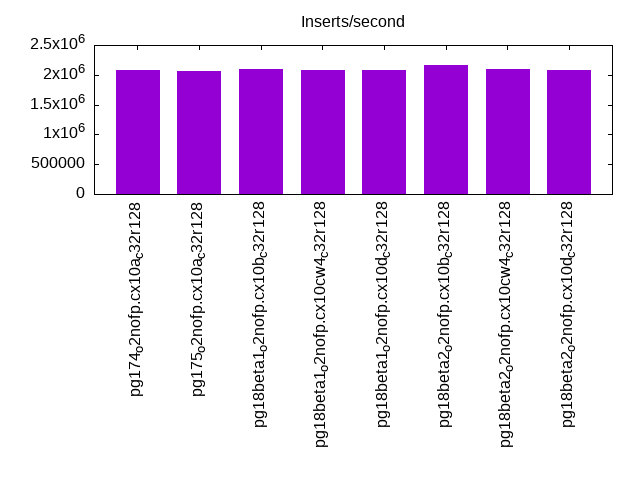
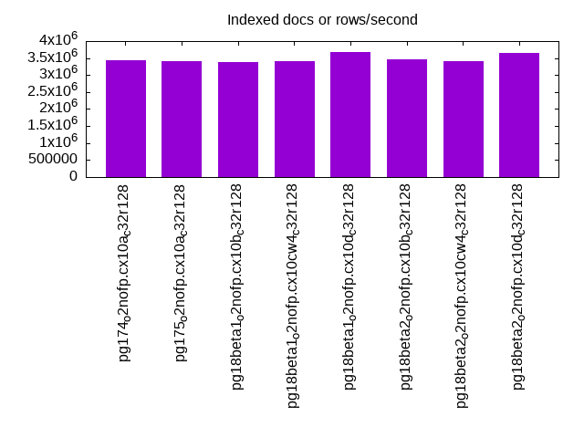
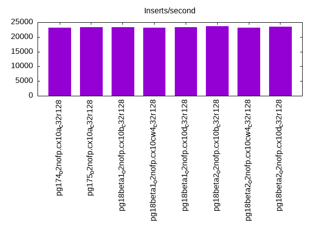
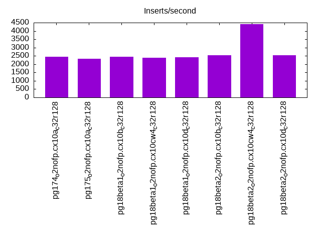
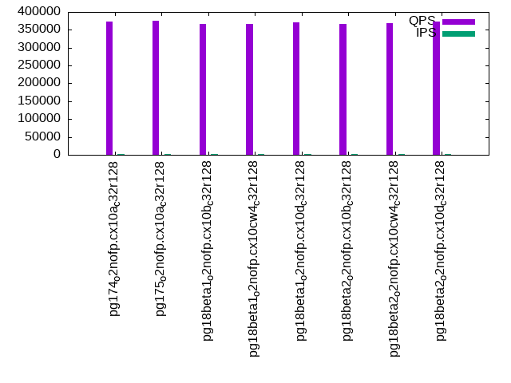
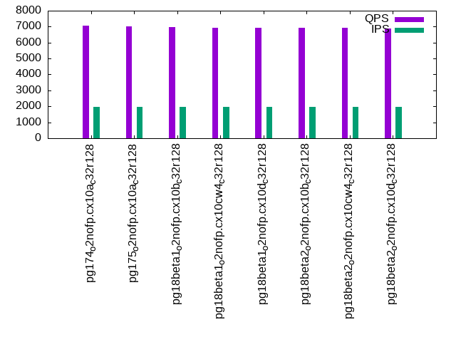
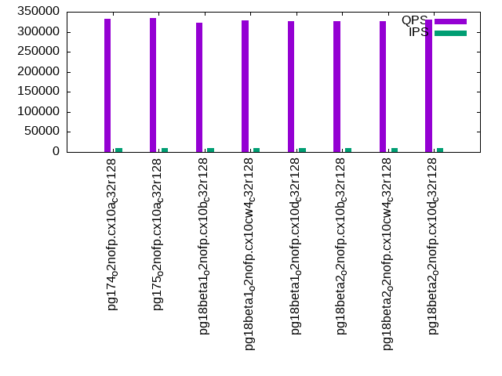
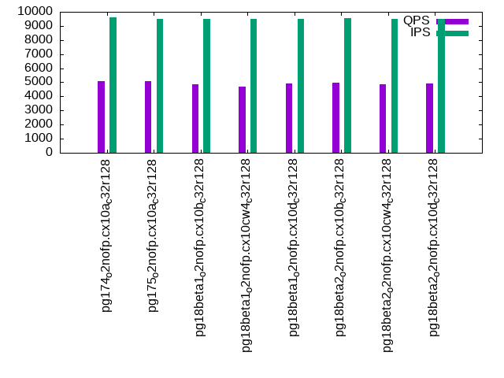
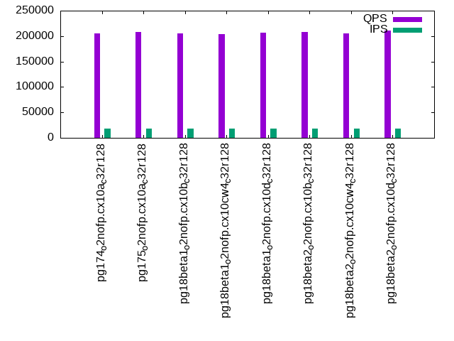
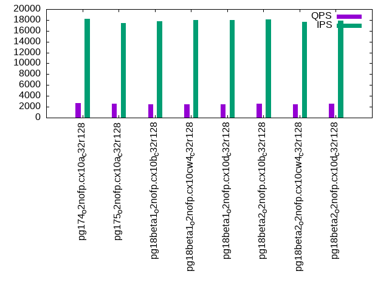

This is a report for the insert benchmark with 4000M docs and 20 client(s). It is generated by scripts (bash, awk, sed) and Tufte might not be impressed. An overview of the insert benchmark is here and a short update is here. Below, by DBMS, I mean DBMS+version.config. An example is my8020.c10b40 where my means MySQL, 8020 is version 8.0.20 and c10b40 is the name for the configuration file.
The test server has 48 AMD cores, 128G RAM and RAID 10 with 2 NVMe devices. It is described here. The benchmark was run with 20 clients and there were 1 or 3 connections per client (1 for queries or inserts without rate limits, 1+1 for rate limited inserts+deletes). It uses 20 tables with a table per client. It loads 200M rows per table without secondary indexes, creates 3 secondary indexes per table, then inserts 4m+1m rows per table with a delete per insert to avoid growing the table. It then does 6 read+write tests for 1800s each that do queries as fast as possible with 100,100,500,500,1000,1000 inserts/s and the same for deletes/s per client concurrent with the queries. The database is larger than memory. Clients and the DBMS share one server. The per-database configs are in the per-database subdirectories here.
The tested DBMS are:
The numbers are inserts/s for l.i0, l.i1 and l.i2, indexed docs (or rows) /s for l.x and queries/s for qr100, qp100 thru qr1000, qp1000" The values are the average rate over the entire test for inserts (IPS) and queries (QPS). The range of values for IPS and QPS is split into 3 parts: bottom 25%, middle 50%, top 25%. Values in the bottom 25% have a red background, values in the top 25% have a green background and values in the middle have no color. A gray background is used for values that can be ignored because the DBMS did not sustain the target insert rate. Red backgrounds are not used when the minimum value is within 80% of the max value.
| dbms | l.i0 | l.x | l.i1 | l.i2 | qr100 | qp100 | qr500 | qp500 | qr1000 | qp1000 |
|---|---|---|---|---|---|---|---|---|---|---|
| pg174_o2nofp.cx10a_c32r128 | 2077922 | 3436426 | 23195 | 2451 | 372847 | 7068 | 333101 | 5066 | 205627 | 2657 |
| pg175_o2nofp.cx10a_c32r128 | 2056555 | 3418804 | 23330 | 2314 | 376506 | 7001 | 334424 | 5064 | 207535 | 2533 |
| pg18beta1_o2nofp.cx10b_c32r128 | 2097535 | 3372681 | 23317 | 2437 | 365365 | 6974 | 322117 | 4878 | 204655 | 2469 |
| pg18beta1_o2nofp.cx10cw4_c32r128 | 2087683 | 3407155 | 23115 | 2398 | 367400 | 6906 | 328490 | 4694 | 204012 | 2450 |
| pg18beta1_o2nofp.cx10d_c32r128 | 2074689 | 3666361 | 23358 | 2403 | 370226 | 6923 | 327476 | 4936 | 207126 | 2502 |
| pg18beta2_o2nofp.cx10b_c32r128 | 2157497 | 3460208 | 23732 | 2526 | 366552 | 6912 | 326432 | 4975 | 208486 | 2550 |
| pg18beta2_o2nofp.cx10cw4_c32r128 | 2094241 | 3401361 | 23135 | 4400 | 367784 | 6912 | 327128 | 4883 | 205929 | 2458 |
| pg18beta2_o2nofp.cx10d_c32r128 | 2088773 | 3649635 | 23571 | 2522 | 372750 | 6893 | 331377 | 4922 | 210748 | 2535 |
This table has relative throughput, throughput for the DBMS relative to the DBMS in the first line, using the absolute throughput from the previous table. Values less than 0.95 have a yellow background. Values greater than 1.05 have a blue background.
| dbms | l.i0 | l.x | l.i1 | l.i2 | qr100 | qp100 | qr500 | qp500 | qr1000 | qp1000 |
|---|---|---|---|---|---|---|---|---|---|---|
| pg174_o2nofp.cx10a_c32r128 | 1.00 | 1.00 | 1.00 | 1.00 | 1.00 | 1.00 | 1.00 | 1.00 | 1.00 | 1.00 |
| pg175_o2nofp.cx10a_c32r128 | 0.99 | 0.99 | 1.01 | 0.94 | 1.01 | 0.99 | 1.00 | 1.00 | 1.01 | 0.95 |
| pg18beta1_o2nofp.cx10b_c32r128 | 1.01 | 0.98 | 1.01 | 0.99 | 0.98 | 0.99 | 0.97 | 0.96 | 1.00 | 0.93 |
| pg18beta1_o2nofp.cx10cw4_c32r128 | 1.00 | 0.99 | 1.00 | 0.98 | 0.99 | 0.98 | 0.99 | 0.93 | 0.99 | 0.92 |
| pg18beta1_o2nofp.cx10d_c32r128 | 1.00 | 1.07 | 1.01 | 0.98 | 0.99 | 0.98 | 0.98 | 0.97 | 1.01 | 0.94 |
| pg18beta2_o2nofp.cx10b_c32r128 | 1.04 | 1.01 | 1.02 | 1.03 | 0.98 | 0.98 | 0.98 | 0.98 | 1.01 | 0.96 |
| pg18beta2_o2nofp.cx10cw4_c32r128 | 1.01 | 0.99 | 1.00 | 1.80 | 0.99 | 0.98 | 0.98 | 0.96 | 1.00 | 0.93 |
| pg18beta2_o2nofp.cx10d_c32r128 | 1.01 | 1.06 | 1.02 | 1.03 | 1.00 | 0.98 | 0.99 | 0.97 | 1.02 | 0.95 |
This lists the average rate of inserts/s for the tests that do inserts concurrent with queries. For such tests the query rate is listed in the table above. The read+write tests are setup so that the insert rate should match the target rate every second. Cells that are not at least 95% of the target have a red background to indicate a failure to satisfy the target.
| dbms | qr100.L1 | qp100.L2 | qr500.L3 | qp500.L4 | qr1000.L5 | qp1000.L6 |
|---|---|---|---|---|---|---|
| pg174_o2nofp.cx10a_c32r128 | 1977 | 1977 | 9874 | 9590 | 18200 | 18246 |
| pg175_o2nofp.cx10a_c32r128 | 1977 | 1977 | 9793 | 9509 | 18256 | 17467 |
| pg18beta1_o2nofp.cx10b_c32r128 | 1976 | 1976 | 9804 | 9474 | 18036 | 17804 |
| pg18beta1_o2nofp.cx10cw4_c32r128 | 1977 | 1976 | 9858 | 9474 | 17982 | 17955 |
| pg18beta1_o2nofp.cx10d_c32r128 | 1977 | 1977 | 9798 | 9504 | 18163 | 18009 |
| pg18beta2_o2nofp.cx10b_c32r128 | 1977 | 1977 | 9831 | 9539 | 18145 | 18090 |
| pg18beta2_o2nofp.cx10cw4_c32r128 | 1976 | 1977 | 9798 | 9519 | 17955 | 17664 |
| pg18beta2_o2nofp.cx10d_c32r128 | 1976 | 1977 | 9820 | 9489 | 18100 | 17884 |
| target | 2000 | 2000 | 10000 | 10000 | 20000 | 20000 |
l.i0: load without secondary indexes. Graphs for performance per 1-second interval are here.
Average throughput:
Insert response time histogram: each cell has the percentage of responses that take <= the time in the header and max is the max response time in seconds. For the max column values in the top 25% of the range have a red background and in the bottom 25% of the range have a green background. The red background is not used when the min value is within 80% of the max value.
| dbms | 256us | 1ms | 4ms | 16ms | 64ms | 256ms | 1s | 4s | 16s | gt | max |
|---|---|---|---|---|---|---|---|---|---|---|---|
| pg174_o2nofp.cx10a_c32r128 | 90.409 | 9.378 | 0.120 | 0.077 | 0.011 | 0.004 | nonzero | 1.365 | |||
| pg175_o2nofp.cx10a_c32r128 | 91.521 | 8.234 | 0.142 | 0.082 | 0.014 | 0.006 | nonzero | 1.562 | |||
| pg18beta1_o2nofp.cx10b_c32r128 | 93.087 | 6.620 | 0.183 | 0.100 | 0.005 | 0.005 | nonzero | 1.368 | |||
| pg18beta1_o2nofp.cx10cw4_c32r128 | 93.166 | 6.573 | 0.160 | 0.089 | 0.005 | 0.006 | nonzero | 1.591 | |||
| pg18beta1_o2nofp.cx10d_c32r128 | 93.067 | 6.635 | 0.186 | 0.100 | 0.005 | 0.006 | nonzero | 1.386 | |||
| pg18beta2_o2nofp.cx10b_c32r128 | 93.599 | 6.111 | 0.199 | 0.081 | 0.006 | 0.003 | nonzero | 1.369 | |||
| pg18beta2_o2nofp.cx10cw4_c32r128 | 93.262 | 6.425 | 0.199 | 0.104 | 0.005 | 0.006 | nonzero | 1.951 | |||
| pg18beta2_o2nofp.cx10d_c32r128 | 93.001 | 6.672 | 0.210 | 0.106 | 0.005 | 0.005 | nonzero | 2.568 |
Performance metrics for the DBMS listed above. Some are normalized by throughput, others are not. Legend for results is here.
ips qps rps rmbps wps wmbps rpq rkbpq wpi wkbpi csps cpups cspq cpupq dbgb1 dbgb2 rss maxop p50 p99 tag 2077922 0 1731 13.9 8698.7 828.2 0.001 0.007 0.004 0.408 400682 58.5 0.193 14 382.7 478.8 97.0 1.365 111081 47068 pg174_o2nofp.cx10a_c32r128 2056555 0 1724 13.8 8581.8 822.5 0.001 0.007 0.004 0.410 377749 57.8 0.184 13 382.7 478.8 97.2 1.562 111580 33870 pg175_o2nofp.cx10a_c32r128 2097535 0 1787 14.3 8745.7 838.2 0.001 0.007 0.004 0.409 362478 58.5 0.173 13 382.7 478.8 97.2 1.368 113971 36161 pg18beta1_o2nofp.cx10b_c32r128 2087683 0 1804 14.4 8745.2 834.3 0.001 0.007 0.004 0.409 358126 58.3 0.172 13 382.7 478.8 97.2 1.591 114087 27171 pg18beta1_o2nofp.cx10cw4_c32r128 2074689 0 1774 14.2 8668.8 826.8 0.001 0.007 0.004 0.408 358779 58.0 0.173 13 382.7 478.8 97.1 1.386 113617 39655 pg18beta1_o2nofp.cx10d_c32r128 2157497 0 1836 14.7 9001.2 862.9 0.001 0.007 0.004 0.410 369606 59.7 0.171 13 382.7 478.8 97.2 1.369 115583 52045 pg18beta2_o2nofp.cx10b_c32r128 2094241 0 1814 14.5 8776.6 839.0 0.001 0.007 0.004 0.410 365500 58.1 0.175 13 382.7 478.8 97.0 1.951 114376 31066 pg18beta2_o2nofp.cx10cw4_c32r128 2088773 0 1758 14.1 8748.6 836.1 0.001 0.007 0.004 0.410 372758 58.2 0.178 13 382.7 478.8 97.2 2.568 114312 28369 pg18beta2_o2nofp.cx10d_c32r128
l.x: create secondary indexes.
Average throughput:
Performance metrics for the DBMS listed above. Some are normalized by throughput, others are not. Legend for results is here.
ips qps rps rmbps wps wmbps rpq rkbpq wpi wkbpi csps cpups cspq cpupq dbgb1 dbgb2 rss maxop p50 p99 tag 3436426 0 11308 1091.3 8895.7 981.4 0.003 0.325 0.003 0.292 89477 23.8 0.026 3 768.4 863.7 31.4 0.081 NA NA pg174_o2nofp.cx10a_c32r128 3418804 0 11259 1086.5 8741.1 976.1 0.003 0.325 0.003 0.292 89975 23.4 0.026 3 768.4 863.7 30.8 0.021 NA NA pg175_o2nofp.cx10a_c32r128 3372681 0 11202 1074.7 8749.5 969.0 0.003 0.326 0.003 0.294 89331 23.3 0.026 3 768.4 864.0 41.9 0.003 NA NA pg18beta1_o2nofp.cx10b_c32r128 3407155 0 11492 1082.0 8871.8 980.8 0.003 0.325 0.003 0.295 94391 24.3 0.028 3 768.4 863.7 58.6 0.056 NA NA pg18beta1_o2nofp.cx10cw4_c32r128 3666361 0 12298 1166.4 9345.1 1048.2 0.003 0.326 0.003 0.293 116194 26.0 0.032 3 768.4 863.7 41.2 0.316 NA NA pg18beta1_o2nofp.cx10d_c32r128 3460208 0 11308 1100.7 8913.6 992.8 0.003 0.326 0.003 0.294 92118 23.7 0.027 3 768.4 863.7 31.4 0.060 NA NA pg18beta2_o2nofp.cx10b_c32r128 3401361 0 11401 1081.9 8840.3 973.9 0.003 0.326 0.003 0.293 93126 23.7 0.027 3 768.4 864.0 56.0 0.003 NA NA pg18beta2_o2nofp.cx10cw4_c32r128 3649635 0 12266 1162.8 9326.2 1046.3 0.003 0.326 0.003 0.294 117587 25.8 0.032 3 768.4 863.8 31.9 0.003 NA NA pg18beta2_o2nofp.cx10d_c32r128
l.i1: continue load after secondary indexes created with 50 inserts per transaction. Graphs for performance per 1-second interval are here.
Average throughput:
Insert response time histogram: each cell has the percentage of responses that take <= the time in the header and max is the max response time in seconds. For the max column values in the top 25% of the range have a red background and in the bottom 25% of the range have a green background. The red background is not used when the min value is within 80% of the max value.
| dbms | 256us | 1ms | 4ms | 16ms | 64ms | 256ms | 1s | 4s | 16s | gt | max |
|---|---|---|---|---|---|---|---|---|---|---|---|
| pg174_o2nofp.cx10a_c32r128 | 19.267 | 65.279 | 15.278 | 0.069 | 0.105 | 0.001 | 6.705 | ||||
| pg175_o2nofp.cx10a_c32r128 | 19.572 | 66.370 | 13.859 | 0.098 | 0.099 | 0.001 | 4.653 | ||||
| pg18beta1_o2nofp.cx10b_c32r128 | 15.956 | 70.725 | 13.079 | 0.118 | 0.121 | 0.001 | 4.706 | ||||
| pg18beta1_o2nofp.cx10cw4_c32r128 | 15.593 | 68.220 | 15.990 | 0.078 | 0.119 | 2.905 | |||||
| pg18beta1_o2nofp.cx10d_c32r128 | 15.986 | 69.218 | 14.615 | 0.067 | 0.115 | nonzero | 4.267 | ||||
| pg18beta2_o2nofp.cx10b_c32r128 | 16.427 | 70.529 | 12.819 | 0.117 | 0.108 | 0.001 | 5.485 | ||||
| pg18beta2_o2nofp.cx10cw4_c32r128 | 14.987 | 69.659 | 15.129 | 0.094 | 0.131 | nonzero | 4.013 | ||||
| pg18beta2_o2nofp.cx10d_c32r128 | 16.209 | 70.025 | 13.555 | 0.091 | 0.120 | nonzero | 5.186 |
Delete response time histogram: each cell has the percentage of responses that take <= the time in the header and max is the max response time in seconds. For the max column values in the top 25% of the range have a red background and in the bottom 25% of the range have a green background. The red background is not used when the min value is within 80% of the max value.
| dbms | 256us | 1ms | 4ms | 16ms | 64ms | 256ms | 1s | 4s | 16s | gt | max |
|---|---|---|---|---|---|---|---|---|---|---|---|
| pg174_o2nofp.cx10a_c32r128 | 2.442 | 8.414 | 24.268 | 60.727 | 4.059 | 0.034 | 0.056 | 2.453 | |||
| pg175_o2nofp.cx10a_c32r128 | 2.551 | 8.731 | 23.830 | 60.250 | 4.527 | 0.052 | 0.059 | nonzero | 4.006 | ||
| pg18beta1_o2nofp.cx10b_c32r128 | 2.379 | 8.189 | 23.959 | 63.676 | 1.683 | 0.055 | 0.059 | 2.584 | |||
| pg18beta1_o2nofp.cx10cw4_c32r128 | 2.464 | 8.329 | 23.151 | 63.743 | 2.211 | 0.038 | 0.065 | 2.798 | |||
| pg18beta1_o2nofp.cx10d_c32r128 | 2.392 | 8.736 | 23.346 | 63.381 | 2.046 | 0.028 | 0.070 | nonzero | 4.073 | ||
| pg18beta2_o2nofp.cx10b_c32r128 | 2.475 | 8.238 | 28.512 | 59.236 | 1.426 | 0.055 | 0.057 | 3.202 | |||
| pg18beta2_o2nofp.cx10cw4_c32r128 | 2.423 | 8.731 | 26.039 | 60.746 | 1.948 | 0.044 | 0.068 | 2.640 | |||
| pg18beta2_o2nofp.cx10d_c32r128 | 2.491 | 8.410 | 23.201 | 63.763 | 2.031 | 0.043 | 0.060 | 2.887 |
Performance metrics for the DBMS listed above. Some are normalized by throughput, others are not. Legend for results is here.
ips qps rps rmbps wps wmbps rpq rkbpq wpi wkbpi csps cpups cspq cpupq dbgb1 dbgb2 rss maxop p50 p99 tag 23195 0 29362 235.0 34833.0 761.2 1.266 10.373 1.502 33.606 81262 30.5 3.503 631 781.5 877.6 86.7 6.705 1149 0 pg174_o2nofp.cx10a_c32r128 23330 0 29567 235.6 34822.7 758.3 1.267 10.340 1.493 33.284 81696 30.8 3.502 634 781.5 877.6 88.8 4.653 1149 0 pg175_o2nofp.cx10a_c32r128 23317 0 29498 235.5 34738.6 765.5 1.265 10.344 1.490 33.616 83498 30.7 3.581 632 781.5 877.6 85.2 4.706 1199 0 pg18beta1_o2nofp.cx10b_c32r128 23115 0 29237 234.1 34054.9 758.4 1.265 10.370 1.473 33.600 82602 30.9 3.574 642 781.5 923.6 78.4 2.905 1149 0 pg18beta1_o2nofp.cx10cw4_c32r128 23358 0 29479 234.5 34749.5 762.8 1.262 10.280 1.488 33.441 83327 30.6 3.567 629 781.5 877.6 80.7 4.267 1149 0 pg18beta1_o2nofp.cx10d_c32r128 23732 0 29992 238.7 35326.4 776.0 1.264 10.301 1.489 33.484 84219 29.7 3.549 601 781.5 877.6 83.5 5.485 1199 0 pg18beta2_o2nofp.cx10b_c32r128 23135 0 29250 233.6 33840.7 753.6 1.264 10.340 1.463 33.355 83101 30.2 3.592 627 781.5 933.5 78.4 4.013 1149 0 pg18beta2_o2nofp.cx10cw4_c32r128 23571 0 29818 237.8 34840.7 769.9 1.265 10.329 1.478 33.448 84409 31.2 3.581 635 781.5 919.9 75.6 5.186 1199 0 pg18beta2_o2nofp.cx10d_c32r128
l.i2: continue load after secondary indexes created with 5 inserts per transaction. Graphs for performance per 1-second interval are here.
Average throughput:
Insert response time histogram: each cell has the percentage of responses that take <= the time in the header and max is the max response time in seconds. For the max column values in the top 25% of the range have a red background and in the bottom 25% of the range have a green background. The red background is not used when the min value is within 80% of the max value.
| dbms | 256us | 1ms | 4ms | 16ms | 64ms | 256ms | 1s | 4s | 16s | gt | max |
|---|---|---|---|---|---|---|---|---|---|---|---|
| pg174_o2nofp.cx10a_c32r128 | 0.014 | 39.075 | 60.668 | 0.044 | 0.110 | 0.025 | 0.052 | 0.013 | nonzero | 5.447 | |
| pg175_o2nofp.cx10a_c32r128 | 42.491 | 57.392 | 0.013 | 0.038 | 0.016 | 0.029 | 0.020 | nonzero | 5.541 | ||
| pg18beta1_o2nofp.cx10b_c32r128 | 0.141 | 40.665 | 58.698 | 0.111 | 0.308 | 0.021 | 0.037 | 0.018 | 0.001 | 6.117 | |
| pg18beta1_o2nofp.cx10cw4_c32r128 | 0.005 | 35.639 | 63.874 | 0.102 | 0.212 | 0.037 | 0.086 | 0.044 | nonzero | 5.517 | |
| pg18beta1_o2nofp.cx10d_c32r128 | 0.003 | 37.377 | 62.192 | 0.079 | 0.222 | 0.023 | 0.050 | 0.050 | 0.004 | 6.089 | |
| pg18beta2_o2nofp.cx10b_c32r128 | 0.001 | 41.576 | 58.133 | 0.052 | 0.134 | 0.024 | 0.049 | 0.031 | nonzero | 5.355 | |
| pg18beta2_o2nofp.cx10cw4_c32r128 | 0.084 | 36.273 | 62.851 | 0.133 | 0.508 | 0.032 | 0.067 | 0.051 | 0.002 | 5.447 | |
| pg18beta2_o2nofp.cx10d_c32r128 | 0.077 | 38.334 | 61.138 | 0.078 | 0.238 | 0.031 | 0.062 | 0.041 | 0.001 | 5.888 |
Delete response time histogram: each cell has the percentage of responses that take <= the time in the header and max is the max response time in seconds. For the max column values in the top 25% of the range have a red background and in the bottom 25% of the range have a green background. The red background is not used when the min value is within 80% of the max value.
| dbms | 256us | 1ms | 4ms | 16ms | 64ms | 256ms | 1s | 4s | 16s | gt | max |
|---|---|---|---|---|---|---|---|---|---|---|---|
| pg174_o2nofp.cx10a_c32r128 | 0.095 | 1.345 | 0.020 | 0.073 | 98.464 | 0.002 | 0.001 | nonzero | 1.177 | ||
| pg175_o2nofp.cx10a_c32r128 | 0.043 | 99.954 | 0.002 | 0.001 | nonzero | 2.575 | |||||
| pg18beta1_o2nofp.cx10b_c32r128 | 0.205 | 3.880 | 2.167 | 0.064 | 93.678 | 0.005 | 0.001 | nonzero | 2.115 | ||
| pg18beta1_o2nofp.cx10cw4_c32r128 | 0.061 | 0.928 | 0.019 | 0.097 | 98.891 | 0.002 | 0.001 | 0.001 | 2.999 | ||
| pg18beta1_o2nofp.cx10d_c32r128 | 0.019 | 0.813 | 1.389 | 0.131 | 97.645 | 0.002 | 0.001 | 0.001 | nonzero | 4.776 | |
| pg18beta2_o2nofp.cx10b_c32r128 | 0.114 | 0.595 | 0.002 | 0.108 | 99.177 | 0.003 | 0.001 | nonzero | 3.361 | ||
| pg18beta2_o2nofp.cx10cw4_c32r128 | 0.109 | 2.511 | 2.565 | 0.671 | 94.139 | 0.002 | 0.002 | 0.001 | nonzero | 4.775 | |
| pg18beta2_o2nofp.cx10d_c32r128 | 0.059 | 1.532 | 2.740 | 0.199 | 95.467 | 0.002 | 0.001 | 0.001 | 3.133 |
Performance metrics for the DBMS listed above. Some are normalized by throughput, others are not. Legend for results is here.
ips qps rps rmbps wps wmbps rpq rkbpq wpi wkbpi csps cpups cspq cpupq dbgb1 dbgb2 rss maxop p50 p99 tag 2451 0 3072 26.8 4641.5 72.8 1.254 11.196 1.894 30.439 18652 29.7 7.611 5817 784.8 880.9 81.0 5.447 225 95 pg174_o2nofp.cx10a_c32r128 2314 0 2811 22.4 4138.8 66.6 1.215 9.925 1.789 29.462 17274 32.0 7.465 6638 784.9 880.9 77.8 5.541 215 25 pg175_o2nofp.cx10a_c32r128 2437 0 3162 30.5 4746.6 76.0 1.297 12.826 1.948 31.948 18315 28.4 7.515 5593 784.8 880.8 85.8 6.117 225 40 pg18beta1_o2nofp.cx10b_c32r128 2398 0 3035 26.1 4891.1 74.9 1.266 11.146 2.040 31.993 18494 25.9 7.712 5184 784.8 880.9 79.0 5.517 215 0 pg18beta1_o2nofp.cx10cw4_c32r128 2403 0 3028 26.6 4706.1 72.9 1.260 11.329 1.958 31.064 18504 26.8 7.700 5353 784.8 880.9 82.5 6.089 120 0 pg18beta1_o2nofp.cx10d_c32r128 2526 0 3221 29.3 4898.0 78.5 1.275 11.896 1.939 31.823 18995 30.6 7.520 5815 784.9 880.9 78.4 5.355 225 0 pg18beta2_o2nofp.cx10b_c32r128 4400 0 5670 52.3 8500.0 136.9 1.289 12.173 1.932 31.851 33669 40.0 7.651 4363 784.8 880.8 81.1 5.447 230 0 pg18beta2_o2nofp.cx10cw4_c32r128 2522 0 3134 27.3 4986.7 76.5 1.243 11.076 1.978 31.052 19275 24.9 7.644 4740 784.7 880.8 80.0 5.888 260 0 pg18beta2_o2nofp.cx10d_c32r128
qr100.L1: range queries with 100 insert/s per client. Graphs for performance per 1-second interval are here.
Average throughput:
Query response time histogram: each cell has the percentage of responses that take <= the time in the header and max is the max response time in seconds. For max values in the top 25% of the range have a red background and in the bottom 25% of the range have a green background. The red background is not used when the min value is within 80% of the max value.
| dbms | 256us | 1ms | 4ms | 16ms | 64ms | 256ms | 1s | 4s | 16s | gt | max |
|---|---|---|---|---|---|---|---|---|---|---|---|
| pg174_o2nofp.cx10a_c32r128 | 99.995 | 0.004 | nonzero | nonzero | nonzero | nonzero | nonzero | 0.306 | |||
| pg175_o2nofp.cx10a_c32r128 | 99.996 | 0.004 | nonzero | nonzero | nonzero | nonzero | 0.075 | ||||
| pg18beta1_o2nofp.cx10b_c32r128 | 99.995 | 0.004 | 0.001 | nonzero | nonzero | nonzero | nonzero | 0.470 | |||
| pg18beta1_o2nofp.cx10cw4_c32r128 | 99.996 | 0.004 | nonzero | nonzero | nonzero | nonzero | nonzero | nonzero | 1.829 | ||
| pg18beta1_o2nofp.cx10d_c32r128 | 99.995 | 0.004 | nonzero | nonzero | nonzero | nonzero | 0.251 | ||||
| pg18beta2_o2nofp.cx10b_c32r128 | 99.996 | 0.004 | 0.001 | nonzero | nonzero | nonzero | 0.146 | ||||
| pg18beta2_o2nofp.cx10cw4_c32r128 | 99.996 | 0.004 | nonzero | nonzero | nonzero | nonzero | nonzero | 0.324 | |||
| pg18beta2_o2nofp.cx10d_c32r128 | 99.996 | 0.003 | nonzero | nonzero | nonzero | 0.051 |
Insert response time histogram: each cell has the percentage of responses that take <= the time in the header and max is the max response time in seconds. For max values in the top 25% of the range have a red background and in the bottom 25% of the range have a green background. The red background is not used when the min value is within 80% of the max value.
| dbms | 256us | 1ms | 4ms | 16ms | 64ms | 256ms | 1s | 4s | 16s | gt | max |
|---|---|---|---|---|---|---|---|---|---|---|---|
| pg174_o2nofp.cx10a_c32r128 | 99.136 | 0.817 | 0.042 | 0.006 | 0.276 | ||||||
| pg175_o2nofp.cx10a_c32r128 | 98.812 | 1.106 | 0.051 | 0.031 | 0.947 | ||||||
| pg18beta1_o2nofp.cx10b_c32r128 | 99.369 | 0.519 | 0.058 | 0.053 | 0.878 | ||||||
| pg18beta1_o2nofp.cx10cw4_c32r128 | 99.247 | 0.711 | 0.021 | 0.014 | 0.007 | 2.264 | |||||
| pg18beta1_o2nofp.cx10d_c32r128 | 99.269 | 0.681 | 0.042 | 0.008 | 0.481 | ||||||
| pg18beta2_o2nofp.cx10b_c32r128 | 98.889 | 1.008 | 0.078 | 0.025 | 0.859 | ||||||
| pg18beta2_o2nofp.cx10cw4_c32r128 | 98.974 | 0.886 | 0.032 | 0.103 | 0.006 | 1.258 | |||||
| pg18beta2_o2nofp.cx10d_c32r128 | 98.808 | 1.092 | 0.057 | 0.036 | 0.007 | 2.333 |
Delete response time histogram: each cell has the percentage of responses that take <= the time in the header and max is the max response time in seconds. For max values in the top 25% of the range have a red background and in the bottom 25% of the range have a green background. The red background is not used when the min value is within 80% of the max value.
| dbms | 256us | 1ms | 4ms | 16ms | 64ms | 256ms | 1s | 4s | 16s | gt | max |
|---|---|---|---|---|---|---|---|---|---|---|---|
| pg174_o2nofp.cx10a_c32r128 | 45.672 | 54.290 | 0.036 | 0.001 | 0.090 | ||||||
| pg175_o2nofp.cx10a_c32r128 | 49.878 | 50.061 | 0.056 | 0.004 | 0.001 | 0.256 | |||||
| pg18beta1_o2nofp.cx10b_c32r128 | 43.825 | 56.128 | 0.046 | 0.001 | 0.060 | ||||||
| pg18beta1_o2nofp.cx10cw4_c32r128 | 46.774 | 53.190 | 0.035 | 0.001 | 0.025 | ||||||
| pg18beta1_o2nofp.cx10d_c32r128 | 43.353 | 56.572 | 0.065 | 0.008 | 0.001 | 0.069 | |||||
| pg18beta2_o2nofp.cx10b_c32r128 | 45.535 | 54.408 | 0.050 | 0.007 | 0.035 | ||||||
| pg18beta2_o2nofp.cx10cw4_c32r128 | 47.426 | 52.521 | 0.037 | 0.015 | 0.034 | ||||||
| pg18beta2_o2nofp.cx10d_c32r128 | 48.039 | 51.906 | 0.047 | 0.008 | 0.023 |
Performance metrics for the DBMS listed above. Some are normalized by throughput, others are not. Legend for results is here.
ips qps rps rmbps wps wmbps rpq rkbpq wpi wkbpi csps cpups cspq cpupq dbgb1 dbgb2 rss maxop p50 p99 tag 1977 372847 2721 22.0 1234.3 36.0 0.007 0.060 0.624 18.670 1421774 43.0 3.813 55 785.0 881.0 94.8 0.306 18955 18140 pg174_o2nofp.cx10a_c32r128 1977 376506 2722 22.0 1213.0 35.8 0.007 0.060 0.614 18.558 1436110 43.1 3.814 55 785.0 881.0 95.4 0.075 19115 18380 pg175_o2nofp.cx10a_c32r128 1976 365365 2666 21.4 1298.5 36.6 0.007 0.060 0.657 18.984 1394620 43.1 3.817 57 784.9 880.9 96.0 0.470 18803 18052 pg18beta1_o2nofp.cx10b_c32r128 1977 367400 2666 21.4 1266.0 36.4 0.007 0.060 0.640 18.841 1401305 43.2 3.814 56 785.0 881.0 95.7 1.829 18748 17965 pg18beta1_o2nofp.cx10cw4_c32r128 1977 370226 2669 21.5 1278.6 36.5 0.007 0.059 0.647 18.901 1412129 43.2 3.814 56 784.9 881.0 95.7 0.251 18716 17949 pg18beta1_o2nofp.cx10d_c32r128 1977 366552 2672 21.5 1313.4 36.8 0.007 0.060 0.664 19.039 1398651 43.2 3.816 57 785.0 881.0 96.1 0.146 18636 17892 pg18beta2_o2nofp.cx10b_c32r128 1976 367784 2660 21.3 1323.2 37.0 0.007 0.059 0.670 19.153 1403818 43.1 3.817 56 785.0 881.1 95.8 0.324 18540 17667 pg18beta2_o2nofp.cx10cw4_c32r128 1976 372750 2666 21.5 1304.2 36.7 0.007 0.059 0.660 19.031 1422802 43.0 3.817 55 784.9 880.9 95.8 0.051 19051 18268 pg18beta2_o2nofp.cx10d_c32r128
qp100.L2: point queries with 100 insert/s per client. Graphs for performance per 1-second interval are here.
Average throughput:
Query response time histogram: each cell has the percentage of responses that take <= the time in the header and max is the max response time in seconds. For max values in the top 25% of the range have a red background and in the bottom 25% of the range have a green background. The red background is not used when the min value is within 80% of the max value.
| dbms | 256us | 1ms | 4ms | 16ms | 64ms | 256ms | 1s | 4s | 16s | gt | max |
|---|---|---|---|---|---|---|---|---|---|---|---|
| pg174_o2nofp.cx10a_c32r128 | nonzero | 2.638 | 94.203 | 0.383 | 2.658 | 0.061 | 0.040 | 0.015 | 0.002 | 5.415 | |
| pg175_o2nofp.cx10a_c32r128 | 2.731 | 94.173 | 0.331 | 2.643 | 0.063 | 0.042 | 0.017 | 0.002 | 5.630 | ||
| pg18beta1_o2nofp.cx10b_c32r128 | nonzero | 2.473 | 94.364 | 0.378 | 2.670 | 0.060 | 0.039 | 0.016 | 0.001 | 5.591 | |
| pg18beta1_o2nofp.cx10cw4_c32r128 | 2.314 | 94.401 | 0.342 | 2.818 | 0.071 | 0.037 | 0.015 | 0.001 | 4.697 | ||
| pg18beta1_o2nofp.cx10d_c32r128 | nonzero | 2.419 | 94.439 | 0.326 | 2.690 | 0.065 | 0.044 | 0.015 | 0.001 | 5.051 | |
| pg18beta2_o2nofp.cx10b_c32r128 | nonzero | 2.437 | 94.458 | 0.357 | 2.631 | 0.059 | 0.040 | 0.016 | 0.001 | 4.806 | |
| pg18beta2_o2nofp.cx10cw4_c32r128 | nonzero | 2.329 | 94.384 | 0.331 | 2.840 | 0.067 | 0.032 | 0.014 | 0.002 | 5.457 | |
| pg18beta2_o2nofp.cx10d_c32r128 | 2.520 | 94.442 | 0.292 | 2.617 | 0.065 | 0.048 | 0.016 | 0.001 | 4.902 |
Insert response time histogram: each cell has the percentage of responses that take <= the time in the header and max is the max response time in seconds. For max values in the top 25% of the range have a red background and in the bottom 25% of the range have a green background. The red background is not used when the min value is within 80% of the max value.
| dbms | 256us | 1ms | 4ms | 16ms | 64ms | 256ms | 1s | 4s | 16s | gt | max |
|---|---|---|---|---|---|---|---|---|---|---|---|
| pg174_o2nofp.cx10a_c32r128 | 60.368 | 35.990 | 1.097 | 1.261 | 1.182 | 0.101 | 4.784 | ||||
| pg175_o2nofp.cx10a_c32r128 | 62.085 | 34.104 | 1.115 | 1.343 | 1.290 | 0.062 | 4.924 | ||||
| pg18beta1_o2nofp.cx10b_c32r128 | 62.101 | 34.351 | 0.985 | 1.118 | 1.339 | 0.106 | 5.051 | ||||
| pg18beta1_o2nofp.cx10cw4_c32r128 | 59.374 | 37.101 | 1.218 | 1.221 | 1.029 | 0.057 | 4.390 | ||||
| pg18beta1_o2nofp.cx10d_c32r128 | 61.235 | 35.139 | 1.151 | 1.113 | 1.304 | 0.058 | 4.999 | ||||
| pg18beta2_o2nofp.cx10b_c32r128 | 62.457 | 34.126 | 1.021 | 0.889 | 1.454 | 0.053 | 4.595 | ||||
| pg18beta2_o2nofp.cx10cw4_c32r128 | 62.596 | 34.126 | 1.167 | 0.853 | 1.206 | 0.053 | 4.671 | ||||
| pg18beta2_o2nofp.cx10d_c32r128 | 62.324 | 34.249 | 0.932 | 1.276 | 1.197 | 0.022 | 4.607 |
Delete response time histogram: each cell has the percentage of responses that take <= the time in the header and max is the max response time in seconds. For max values in the top 25% of the range have a red background and in the bottom 25% of the range have a green background. The red background is not used when the min value is within 80% of the max value.
| dbms | 256us | 1ms | 4ms | 16ms | 64ms | 256ms | 1s | 4s | 16s | gt | max |
|---|---|---|---|---|---|---|---|---|---|---|---|
| pg174_o2nofp.cx10a_c32r128 | 94.647 | 1.522 | 3.725 | 0.019 | 0.056 | 0.029 | 0.001 | 4.336 | |||
| pg175_o2nofp.cx10a_c32r128 | 94.908 | 1.476 | 3.493 | 0.019 | 0.067 | 0.036 | 3.411 | ||||
| pg18beta1_o2nofp.cx10b_c32r128 | 93.476 | 2.503 | 3.811 | 0.035 | 0.099 | 0.076 | 3.840 | ||||
| pg18beta1_o2nofp.cx10cw4_c32r128 | 93.800 | 2.100 | 3.988 | 0.042 | 0.035 | 0.035 | 0.001 | 4.251 | |||
| pg18beta1_o2nofp.cx10d_c32r128 | 95.061 | 1.229 | 3.586 | 0.032 | 0.047 | 0.043 | 0.001 | 4.453 | |||
| pg18beta2_o2nofp.cx10b_c32r128 | 94.283 | 1.851 | 3.711 | 0.025 | 0.088 | 0.042 | 3.771 | ||||
| pg18beta2_o2nofp.cx10cw4_c32r128 | 95.546 | 0.681 | 3.658 | 0.040 | 0.035 | 0.040 | 3.924 | ||||
| pg18beta2_o2nofp.cx10d_c32r128 | 95.793 | 0.508 | 3.560 | 0.015 | 0.083 | 0.039 | 0.001 | 4.497 |
Performance metrics for the DBMS listed above. Some are normalized by throughput, others are not. Legend for results is here.
ips qps rps rmbps wps wmbps rpq rkbpq wpi wkbpi csps cpups cspq cpupq dbgb1 dbgb2 rss maxop p50 p99 tag 1977 7068 99927 784.2 6634.0 76.5 14.138 113.609 3.356 39.630 223156 19.1 31.572 1297 785.0 881.1 90.9 5.415 416 0 pg174_o2nofp.cx10a_c32r128 1977 7001 99052 777.3 6678.9 76.9 14.149 113.698 3.378 39.812 221153 18.8 31.590 1289 785.1 881.1 92.2 5.630 416 0 pg175_o2nofp.cx10a_c32r128 1976 6974 98742 774.9 6608.0 76.2 14.159 113.781 3.344 39.518 220583 19.2 31.630 1322 785.0 881.0 93.5 5.591 416 0 pg18beta1_o2nofp.cx10b_c32r128 1976 6906 97844 767.6 6589.7 76.2 14.167 113.810 3.335 39.487 218834 20.1 31.686 1397 785.0 881.1 90.6 4.697 400 0 pg18beta1_o2nofp.cx10cw4_c32r128 1977 6923 98026 769.3 6615.4 76.4 14.159 113.781 3.346 39.556 218815 19.6 31.605 1359 785.0 881.1 91.2 5.051 400 0 pg18beta1_o2nofp.cx10d_c32r128 1977 6912 97867 768.1 6568.6 76.0 14.160 113.794 3.323 39.343 218442 18.7 31.605 1299 785.0 881.1 92.7 4.806 416 0 pg18beta2_o2nofp.cx10b_c32r128 1977 6912 97884 767.7 6561.8 76.0 14.161 113.734 3.319 39.386 218867 20.1 31.663 1396 785.3 881.3 91.2 5.457 400 0 pg18beta2_o2nofp.cx10cw4_c32r128 1977 6893 97632 766.3 6582.6 76.1 14.165 113.844 3.330 39.420 217692 19.0 31.583 1323 784.9 881.0 91.2 4.902 400 0 pg18beta2_o2nofp.cx10d_c32r128
qr500.L3: range queries with 500 insert/s per client. Graphs for performance per 1-second interval are here.
Average throughput:
Query response time histogram: each cell has the percentage of responses that take <= the time in the header and max is the max response time in seconds. For max values in the top 25% of the range have a red background and in the bottom 25% of the range have a green background. The red background is not used when the min value is within 80% of the max value.
| dbms | 256us | 1ms | 4ms | 16ms | 64ms | 256ms | 1s | 4s | 16s | gt | max |
|---|---|---|---|---|---|---|---|---|---|---|---|
| pg174_o2nofp.cx10a_c32r128 | 99.977 | 0.018 | 0.003 | 0.001 | 0.001 | nonzero | nonzero | nonzero | 1.887 | ||
| pg175_o2nofp.cx10a_c32r128 | 99.976 | 0.019 | 0.003 | 0.001 | 0.001 | nonzero | nonzero | nonzero | 3.747 | ||
| pg18beta1_o2nofp.cx10b_c32r128 | 99.976 | 0.019 | 0.003 | 0.001 | 0.001 | nonzero | nonzero | nonzero | nonzero | 4.769 | |
| pg18beta1_o2nofp.cx10cw4_c32r128 | 99.978 | 0.017 | 0.003 | 0.001 | 0.001 | nonzero | nonzero | nonzero | 2.282 | ||
| pg18beta1_o2nofp.cx10d_c32r128 | 99.975 | 0.020 | 0.003 | 0.001 | 0.001 | nonzero | nonzero | nonzero | 3.074 | ||
| pg18beta2_o2nofp.cx10b_c32r128 | 99.975 | 0.020 | 0.003 | 0.001 | 0.001 | nonzero | nonzero | nonzero | nonzero | 4.331 | |
| pg18beta2_o2nofp.cx10cw4_c32r128 | 99.975 | 0.020 | 0.003 | 0.001 | 0.001 | nonzero | nonzero | nonzero | 1.418 | ||
| pg18beta2_o2nofp.cx10d_c32r128 | 99.976 | 0.019 | 0.003 | 0.001 | 0.001 | nonzero | nonzero | nonzero | nonzero | 4.469 |
Insert response time histogram: each cell has the percentage of responses that take <= the time in the header and max is the max response time in seconds. For max values in the top 25% of the range have a red background and in the bottom 25% of the range have a green background. The red background is not used when the min value is within 80% of the max value.
| dbms | 256us | 1ms | 4ms | 16ms | 64ms | 256ms | 1s | 4s | 16s | gt | max |
|---|---|---|---|---|---|---|---|---|---|---|---|
| pg174_o2nofp.cx10a_c32r128 | 85.427 | 13.756 | 0.354 | 0.371 | 0.092 | 2.381 | |||||
| pg175_o2nofp.cx10a_c32r128 | 82.915 | 16.430 | 0.333 | 0.220 | 0.091 | 0.011 | 5.518 | ||||
| pg18beta1_o2nofp.cx10b_c32r128 | 82.844 | 16.322 | 0.376 | 0.298 | 0.148 | 0.011 | 5.640 | ||||
| pg18beta1_o2nofp.cx10cw4_c32r128 | 85.745 | 13.536 | 0.370 | 0.238 | 0.111 | 2.846 | |||||
| pg18beta1_o2nofp.cx10d_c32r128 | 83.467 | 15.792 | 0.379 | 0.237 | 0.119 | 0.006 | 5.777 | ||||
| pg18beta2_o2nofp.cx10b_c32r128 | 83.886 | 15.447 | 0.293 | 0.274 | 0.094 | 0.006 | 4.602 | ||||
| pg18beta2_o2nofp.cx10cw4_c32r128 | 82.953 | 16.326 | 0.347 | 0.254 | 0.107 | 0.013 | 5.335 | ||||
| pg18beta2_o2nofp.cx10d_c32r128 | 84.664 | 14.670 | 0.344 | 0.216 | 0.097 | 0.009 | 5.059 |
Delete response time histogram: each cell has the percentage of responses that take <= the time in the header and max is the max response time in seconds. For max values in the top 25% of the range have a red background and in the bottom 25% of the range have a green background. The red background is not used when the min value is within 80% of the max value.
| dbms | 256us | 1ms | 4ms | 16ms | 64ms | 256ms | 1s | 4s | 16s | gt | max |
|---|---|---|---|---|---|---|---|---|---|---|---|
| pg174_o2nofp.cx10a_c32r128 | 39.057 | 59.553 | 1.374 | 0.006 | 0.008 | 0.001 | 1.886 | ||||
| pg175_o2nofp.cx10a_c32r128 | 39.114 | 59.306 | 1.563 | 0.007 | 0.003 | 0.006 | 0.001 | 4.933 | |||
| pg18beta1_o2nofp.cx10b_c32r128 | 34.225 | 64.004 | 1.752 | 0.008 | 0.007 | 0.003 | 2.976 | ||||
| pg18beta1_o2nofp.cx10cw4_c32r128 | 41.335 | 57.229 | 1.421 | 0.006 | 0.007 | 0.003 | 2.223 | ||||
| pg18beta1_o2nofp.cx10d_c32r128 | 36.902 | 61.328 | 1.751 | 0.008 | 0.003 | 0.005 | 0.003 | 5.576 | |||
| pg18beta2_o2nofp.cx10b_c32r128 | 36.490 | 61.931 | 1.564 | 0.007 | 0.005 | 0.002 | 0.001 | 4.299 | |||
| pg18beta2_o2nofp.cx10cw4_c32r128 | 41.960 | 56.276 | 1.754 | 0.004 | 0.004 | 0.003 | 2.327 | ||||
| pg18beta2_o2nofp.cx10d_c32r128 | 42.325 | 56.144 | 1.518 | 0.006 | 0.005 | 0.003 | nonzero | 4.793 |
Performance metrics for the DBMS listed above. Some are normalized by throughput, others are not. Legend for results is here.
ips qps rps rmbps wps wmbps rpq rkbpq wpi wkbpi csps cpups cspq cpupq dbgb1 dbgb2 rss maxop p50 p99 tag 9874 333101 13802 111.4 14502.0 242.9 0.041 0.343 1.469 25.188 1252077 49.4 3.759 71 785.5 881.5 87.5 1.887 17253 15295 pg174_o2nofp.cx10a_c32r128 9793 334424 13687 110.4 14385.4 241.0 0.041 0.338 1.469 25.197 1256143 49.4 3.756 71 785.5 881.5 86.9 3.747 16958 15061 pg175_o2nofp.cx10a_c32r128 9804 322117 13725 110.7 14378.3 241.2 0.043 0.352 1.467 25.193 1210877 49.9 3.759 74 785.4 881.5 84.5 4.769 16206 14213 pg18beta1_o2nofp.cx10b_c32r128 9858 328490 13799 111.6 14472.9 242.8 0.042 0.348 1.468 25.226 1240484 49.6 3.776 72 785.5 881.5 86.4 2.282 16829 14672 pg18beta1_o2nofp.cx10cw4_c32r128 9798 327476 13714 110.2 14388.1 241.5 0.042 0.345 1.468 25.240 1231216 49.5 3.760 73 786.1 882.1 86.4 3.074 16766 14576 pg18beta1_o2nofp.cx10d_c32r128 9831 326432 13759 111.0 14447.0 241.9 0.042 0.348 1.470 25.202 1226588 49.5 3.758 73 785.4 881.5 87.0 4.331 16381 14400 pg18beta2_o2nofp.cx10b_c32r128 9798 327128 13710 109.8 14382.5 241.6 0.042 0.344 1.468 25.250 1230947 49.3 3.763 72 786.7 882.8 88.5 1.418 16719 14783 pg18beta2_o2nofp.cx10cw4_c32r128 9820 331377 13728 110.8 14393.6 241.2 0.041 0.342 1.466 25.151 1248430 49.4 3.767 72 785.4 881.4 86.7 4.469 16750 14800 pg18beta2_o2nofp.cx10d_c32r128
qp500.L4: point queries with 500 insert/s per client. Graphs for performance per 1-second interval are here.
Average throughput:
Query response time histogram: each cell has the percentage of responses that take <= the time in the header and max is the max response time in seconds. For max values in the top 25% of the range have a red background and in the bottom 25% of the range have a green background. The red background is not used when the min value is within 80% of the max value.
| dbms | 256us | 1ms | 4ms | 16ms | 64ms | 256ms | 1s | 4s | 16s | gt | max |
|---|---|---|---|---|---|---|---|---|---|---|---|
| pg174_o2nofp.cx10a_c32r128 | 0.225 | 93.568 | 1.302 | 4.847 | 0.028 | 0.017 | 0.011 | 0.002 | 6.648 | ||
| pg175_o2nofp.cx10a_c32r128 | 0.229 | 93.633 | 1.277 | 4.806 | 0.026 | 0.015 | 0.012 | 0.003 | 6.169 | ||
| pg18beta1_o2nofp.cx10b_c32r128 | 0.195 | 93.533 | 1.351 | 4.858 | 0.030 | 0.019 | 0.012 | 0.002 | 8.677 | ||
| pg18beta1_o2nofp.cx10cw4_c32r128 | 0.174 | 93.112 | 1.458 | 5.172 | 0.047 | 0.022 | 0.012 | 0.003 | 9.487 | ||
| pg18beta1_o2nofp.cx10d_c32r128 | 0.205 | 93.487 | 1.423 | 4.825 | 0.030 | 0.016 | 0.013 | 0.002 | 7.767 | ||
| pg18beta2_o2nofp.cx10b_c32r128 | 0.206 | 93.657 | 1.251 | 4.828 | 0.026 | 0.015 | 0.016 | 0.002 | 8.735 | ||
| pg18beta2_o2nofp.cx10cw4_c32r128 | 0.191 | 93.265 | 1.486 | 4.992 | 0.032 | 0.019 | 0.011 | 0.003 | 9.210 | ||
| pg18beta2_o2nofp.cx10d_c32r128 | 0.200 | 93.583 | 1.331 | 4.829 | 0.027 | 0.013 | 0.014 | 0.003 | 7.650 |
Insert response time histogram: each cell has the percentage of responses that take <= the time in the header and max is the max response time in seconds. For max values in the top 25% of the range have a red background and in the bottom 25% of the range have a green background. The red background is not used when the min value is within 80% of the max value.
| dbms | 256us | 1ms | 4ms | 16ms | 64ms | 256ms | 1s | 4s | 16s | gt | max |
|---|---|---|---|---|---|---|---|---|---|---|---|
| pg174_o2nofp.cx10a_c32r128 | 39.204 | 59.296 | 0.860 | 0.321 | 0.284 | 0.035 | 6.377 | ||||
| pg175_o2nofp.cx10a_c32r128 | 38.665 | 60.028 | 0.643 | 0.313 | 0.309 | 0.042 | 6.016 | ||||
| pg18beta1_o2nofp.cx10b_c32r128 | 37.622 | 60.875 | 0.802 | 0.360 | 0.290 | 0.051 | 8.490 | ||||
| pg18beta1_o2nofp.cx10cw4_c32r128 | 37.130 | 60.926 | 1.186 | 0.430 | 0.279 | 0.049 | 9.495 | ||||
| pg18beta1_o2nofp.cx10d_c32r128 | 36.433 | 61.794 | 1.083 | 0.337 | 0.308 | 0.046 | 9.530 | ||||
| pg18beta2_o2nofp.cx10b_c32r128 | 38.671 | 59.909 | 0.701 | 0.316 | 0.370 | 0.034 | 9.532 | ||||
| pg18beta2_o2nofp.cx10cw4_c32r128 | 35.841 | 62.551 | 0.928 | 0.360 | 0.272 | 0.048 | 10.292 | ||||
| pg18beta2_o2nofp.cx10d_c32r128 | 39.154 | 59.418 | 0.761 | 0.298 | 0.301 | 0.068 | 7.610 |
Delete response time histogram: each cell has the percentage of responses that take <= the time in the header and max is the max response time in seconds. For max values in the top 25% of the range have a red background and in the bottom 25% of the range have a green background. The red background is not used when the min value is within 80% of the max value.
| dbms | 256us | 1ms | 4ms | 16ms | 64ms | 256ms | 1s | 4s | 16s | gt | max |
|---|---|---|---|---|---|---|---|---|---|---|---|
| pg174_o2nofp.cx10a_c32r128 | 67.089 | 32.522 | 0.096 | 0.206 | 0.086 | 0.001 | 4.696 | ||||
| pg175_o2nofp.cx10a_c32r128 | 74.251 | 25.354 | 0.081 | 0.218 | 0.096 | nonzero | 4.834 | ||||
| pg18beta1_o2nofp.cx10b_c32r128 | 65.173 | 34.392 | 0.111 | 0.227 | 0.095 | 0.002 | 5.444 | ||||
| pg18beta1_o2nofp.cx10cw4_c32r128 | 65.001 | 34.531 | 0.175 | 0.212 | 0.081 | 0.001 | 7.499 | ||||
| pg18beta1_o2nofp.cx10d_c32r128 | 65.026 | 34.540 | 0.145 | 0.208 | 0.081 | nonzero | 6.350 | ||||
| pg18beta2_o2nofp.cx10b_c32r128 | 69.628 | 29.950 | 0.092 | 0.204 | 0.126 | 3.730 | |||||
| pg18beta2_o2nofp.cx10cw4_c32r128 | 73.679 | 25.919 | 0.134 | 0.206 | 0.060 | 0.001 | 6.540 | ||||
| pg18beta2_o2nofp.cx10d_c32r128 | 71.912 | 27.721 | 0.076 | 0.198 | 0.093 | 0.001 | 6.419 |
Performance metrics for the DBMS listed above. Some are normalized by throughput, others are not. Legend for results is here.
ips qps rps rmbps wps wmbps rpq rkbpq wpi wkbpi csps cpups cspq cpupq dbgb1 dbgb2 rss maxop p50 p99 tag 9590 5066 91498 718.7 21615.8 291.5 18.062 145.284 2.254 31.124 209262 35.8 41.310 3392 786.0 882.0 77.3 6.648 288 0 pg174_o2nofp.cx10a_c32r128 9509 5064 91118 715.7 21489.3 288.7 17.994 144.733 2.260 31.089 208814 34.7 41.236 3289 785.9 882.0 31.5 6.169 288 0 pg175_o2nofp.cx10a_c32r128 9474 4878 88562 695.7 21297.9 287.5 18.157 146.048 2.248 31.072 202244 35.8 41.465 3523 785.9 881.9 34.3 8.677 272 0 pg18beta1_o2nofp.cx10b_c32r128 9474 4694 86018 675.4 21280.7 287.0 18.325 147.347 2.246 31.018 197779 36.1 42.134 3692 786.2 882.3 36.4 9.487 256 0 pg18beta1_o2nofp.cx10cw4_c32r128 9504 4936 89365 701.3 21426.8 289.0 18.105 145.482 2.255 31.140 204118 36.0 41.354 3501 787.4 883.5 33.6 7.767 272 0 pg18beta1_o2nofp.cx10d_c32r128 9539 4975 90123 707.8 21456.1 289.2 18.117 145.692 2.249 31.045 206181 35.5 41.447 3425 785.9 882.0 32.7 8.735 272 0 pg18beta2_o2nofp.cx10b_c32r128 9519 4883 88737 696.2 21297.2 288.5 18.174 146.011 2.237 31.035 203154 35.6 41.607 3500 788.2 884.2 34.4 9.210 272 0 pg18beta2_o2nofp.cx10cw4_c32r128 9489 4922 89274 701.2 21268.2 287.6 18.137 145.871 2.241 31.040 204218 35.2 41.488 3433 785.9 881.9 33.2 7.650 272 0 pg18beta2_o2nofp.cx10d_c32r128
qr1000.L5: range queries with 1000 insert/s per client. Graphs for performance per 1-second interval are here.
Average throughput:
Query response time histogram: each cell has the percentage of responses that take <= the time in the header and max is the max response time in seconds. For max values in the top 25% of the range have a red background and in the bottom 25% of the range have a green background. The red background is not used when the min value is within 80% of the max value.
| dbms | 256us | 1ms | 4ms | 16ms | 64ms | 256ms | 1s | 4s | 16s | gt | max |
|---|---|---|---|---|---|---|---|---|---|---|---|
| pg174_o2nofp.cx10a_c32r128 | 99.698 | 0.215 | 0.027 | 0.035 | 0.026 | 0.001 | nonzero | nonzero | 2.647 | ||
| pg175_o2nofp.cx10a_c32r128 | 99.711 | 0.206 | 0.026 | 0.033 | 0.024 | 0.001 | nonzero | nonzero | 2.455 | ||
| pg18beta1_o2nofp.cx10b_c32r128 | 99.693 | 0.227 | 0.027 | 0.030 | 0.021 | nonzero | nonzero | nonzero | nonzero | 4.308 | |
| pg18beta1_o2nofp.cx10cw4_c32r128 | 99.693 | 0.227 | 0.027 | 0.031 | 0.022 | nonzero | nonzero | nonzero | nonzero | 9.658 | |
| pg18beta1_o2nofp.cx10d_c32r128 | 99.698 | 0.223 | 0.027 | 0.030 | 0.021 | nonzero | nonzero | nonzero | 2.267 | ||
| pg18beta2_o2nofp.cx10b_c32r128 | 99.710 | 0.211 | 0.027 | 0.030 | 0.022 | nonzero | nonzero | nonzero | nonzero | 4.222 | |
| pg18beta2_o2nofp.cx10cw4_c32r128 | 99.708 | 0.212 | 0.027 | 0.031 | 0.022 | nonzero | nonzero | nonzero | 2.599 | ||
| pg18beta2_o2nofp.cx10d_c32r128 | 99.721 | 0.203 | 0.026 | 0.029 | 0.020 | nonzero | nonzero | nonzero | nonzero | 5.650 |
Insert response time histogram: each cell has the percentage of responses that take <= the time in the header and max is the max response time in seconds. For max values in the top 25% of the range have a red background and in the bottom 25% of the range have a green background. The red background is not used when the min value is within 80% of the max value.
| dbms | 256us | 1ms | 4ms | 16ms | 64ms | 256ms | 1s | 4s | 16s | gt | max |
|---|---|---|---|---|---|---|---|---|---|---|---|
| pg174_o2nofp.cx10a_c32r128 | 38.247 | 44.091 | 17.450 | 0.109 | 0.095 | 0.008 | 6.192 | ||||
| pg175_o2nofp.cx10a_c32r128 | 40.427 | 42.304 | 17.034 | 0.133 | 0.101 | nonzero | 4.259 | ||||
| pg18beta1_o2nofp.cx10b_c32r128 | 35.981 | 45.357 | 18.442 | 0.097 | 0.111 | 0.013 | 6.721 | ||||
| pg18beta1_o2nofp.cx10cw4_c32r128 | 35.405 | 44.825 | 19.552 | 0.106 | 0.107 | 0.005 | 9.947 | ||||
| pg18beta1_o2nofp.cx10d_c32r128 | 35.610 | 46.182 | 17.992 | 0.104 | 0.108 | 0.003 | 6.670 | ||||
| pg18beta2_o2nofp.cx10b_c32r128 | 35.148 | 46.387 | 18.258 | 0.099 | 0.095 | 0.013 | 7.291 | ||||
| pg18beta2_o2nofp.cx10cw4_c32r128 | 33.624 | 46.489 | 19.677 | 0.086 | 0.120 | 0.004 | 6.460 | ||||
| pg18beta2_o2nofp.cx10d_c32r128 | 35.357 | 46.646 | 17.806 | 0.084 | 0.098 | 0.008 | 8.950 |
Delete response time histogram: each cell has the percentage of responses that take <= the time in the header and max is the max response time in seconds. For max values in the top 25% of the range have a red background and in the bottom 25% of the range have a green background. The red background is not used when the min value is within 80% of the max value.
| dbms | 256us | 1ms | 4ms | 16ms | 64ms | 256ms | 1s | 4s | 16s | gt | max |
|---|---|---|---|---|---|---|---|---|---|---|---|
| pg174_o2nofp.cx10a_c32r128 | 35.922 | 59.058 | 4.930 | 0.040 | 0.050 | nonzero | 4.784 | ||||
| pg175_o2nofp.cx10a_c32r128 | 37.177 | 57.934 | 4.775 | 0.064 | 0.050 | 2.027 | |||||
| pg18beta1_o2nofp.cx10b_c32r128 | 35.589 | 60.821 | 3.496 | 0.039 | 0.054 | nonzero | 5.203 | ||||
| pg18beta1_o2nofp.cx10cw4_c32r128 | 33.533 | 62.744 | 3.623 | 0.046 | 0.054 | nonzero | 9.601 | ||||
| pg18beta1_o2nofp.cx10d_c32r128 | 34.927 | 61.729 | 3.252 | 0.036 | 0.056 | 2.222 | |||||
| pg18beta2_o2nofp.cx10b_c32r128 | 38.855 | 58.006 | 3.057 | 0.040 | 0.043 | 3.732 | |||||
| pg18beta2_o2nofp.cx10cw4_c32r128 | 38.073 | 58.561 | 3.274 | 0.032 | 0.059 | 3.180 | |||||
| pg18beta2_o2nofp.cx10d_c32r128 | 39.217 | 57.667 | 3.039 | 0.034 | 0.044 | nonzero | 5.163 |
Performance metrics for the DBMS listed above. Some are normalized by throughput, others are not. Legend for results is here.
ips qps rps rmbps wps wmbps rpq rkbpq wpi wkbpi csps cpups cspq cpupq dbgb1 dbgb2 rss maxop p50 p99 tag 18200 205627 24269 195.3 26501.7 558.1 0.118 0.973 1.456 31.402 658296 64.6 3.201 151 788.6 932.8 74.5 2.647 10853 879 pg174_o2nofp.cx10a_c32r128 18256 207535 24328 195.9 26760.8 560.5 0.117 0.966 1.466 31.440 664945 64.8 3.204 150 788.6 928.2 76.3 2.455 10790 1266 pg175_o2nofp.cx10a_c32r128 18036 204655 24002 193.3 26117.3 552.4 0.117 0.967 1.448 31.364 650245 65.6 3.177 154 788.4 929.5 75.4 4.308 10666 527 pg18beta1_o2nofp.cx10b_c32r128 17982 204012 23930 192.3 26103.6 552.6 0.117 0.965 1.452 31.470 644993 65.8 3.162 155 789.3 927.3 75.0 9.658 10533 1135 pg18beta1_o2nofp.cx10cw4_c32r128 18163 207126 24194 194.5 26552.8 559.1 0.117 0.962 1.462 31.519 656764 65.9 3.171 153 790.5 928.8 76.0 2.267 10772 1727 pg18beta1_o2nofp.cx10d_c32r128 18145 208486 24128 194.1 26502.7 557.8 0.116 0.953 1.461 31.479 670293 65.2 3.215 150 788.8 930.0 74.9 4.222 10744 2397 pg18beta2_o2nofp.cx10b_c32r128 17955 205929 23874 191.8 26071.0 554.2 0.116 0.954 1.452 31.606 653188 65.1 3.172 152 791.3 925.6 75.3 2.599 10701 1039 pg18beta2_o2nofp.cx10cw4_c32r128 18100 210748 24084 193.8 26484.8 556.9 0.114 0.942 1.463 31.510 674234 65.2 3.199 148 788.8 929.1 78.3 5.650 10948 1215 pg18beta2_o2nofp.cx10d_c32r128
qp1000.L6: point queries with 1000 insert/s per client. Graphs for performance per 1-second interval are here.
Average throughput:
Query response time histogram: each cell has the percentage of responses that take <= the time in the header and max is the max response time in seconds. For max values in the top 25% of the range have a red background and in the bottom 25% of the range have a green background. The red background is not used when the min value is within 80% of the max value.
| dbms | 256us | 1ms | 4ms | 16ms | 64ms | 256ms | 1s | 4s | 16s | gt | max |
|---|---|---|---|---|---|---|---|---|---|---|---|
| pg174_o2nofp.cx10a_c32r128 | 0.002 | 70.997 | 19.625 | 9.131 | 0.169 | 0.052 | 0.024 | 0.002 | 7.334 | ||
| pg175_o2nofp.cx10a_c32r128 | 0.001 | 71.619 | 18.840 | 9.276 | 0.166 | 0.058 | 0.034 | 0.005 | 9.368 | ||
| pg18beta1_o2nofp.cx10b_c32r128 | 0.001 | 68.294 | 21.854 | 9.515 | 0.238 | 0.067 | 0.027 | 0.004 | 9.807 | ||
| pg18beta1_o2nofp.cx10cw4_c32r128 | 0.001 | 67.516 | 22.041 | 10.096 | 0.256 | 0.066 | 0.021 | 0.002 | 8.882 | ||
| pg18beta1_o2nofp.cx10d_c32r128 | 0.001 | 68.569 | 21.554 | 9.552 | 0.243 | 0.056 | 0.021 | 0.004 | 9.625 | ||
| pg18beta2_o2nofp.cx10b_c32r128 | 0.001 | 69.035 | 21.248 | 9.464 | 0.172 | 0.048 | 0.031 | 0.002 | 7.118 | ||
| pg18beta2_o2nofp.cx10cw4_c32r128 | 0.001 | 69.040 | 20.924 | 9.740 | 0.203 | 0.065 | 0.021 | 0.006 | 9.504 | ||
| pg18beta2_o2nofp.cx10d_c32r128 | 0.001 | 69.850 | 20.650 | 9.229 | 0.187 | 0.053 | 0.025 | 0.005 | 9.942 |
Insert response time histogram: each cell has the percentage of responses that take <= the time in the header and max is the max response time in seconds. For max values in the top 25% of the range have a red background and in the bottom 25% of the range have a green background. The red background is not used when the min value is within 80% of the max value.
| dbms | 256us | 1ms | 4ms | 16ms | 64ms | 256ms | 1s | 4s | 16s | gt | max |
|---|---|---|---|---|---|---|---|---|---|---|---|
| pg174_o2nofp.cx10a_c32r128 | 10.708 | 76.523 | 12.196 | 0.369 | 0.192 | 0.013 | 7.527 | ||||
| pg175_o2nofp.cx10a_c32r128 | 10.934 | 75.652 | 12.675 | 0.418 | 0.284 | 0.037 | 9.458 | ||||
| pg18beta1_o2nofp.cx10b_c32r128 | 10.342 | 72.985 | 15.972 | 0.452 | 0.222 | 0.028 | 10.718 | ||||
| pg18beta1_o2nofp.cx10cw4_c32r128 | 8.968 | 71.975 | 18.428 | 0.434 | 0.179 | 0.015 | 8.346 | ||||
| pg18beta1_o2nofp.cx10d_c32r128 | 9.537 | 73.571 | 16.282 | 0.418 | 0.167 | 0.024 | 9.549 | ||||
| pg18beta2_o2nofp.cx10b_c32r128 | 9.520 | 76.183 | 13.721 | 0.318 | 0.243 | 0.015 | 7.387 | ||||
| pg18beta2_o2nofp.cx10cw4_c32r128 | 9.431 | 74.091 | 15.802 | 0.448 | 0.190 | 0.037 | 10.713 | ||||
| pg18beta2_o2nofp.cx10d_c32r128 | 10.382 | 75.904 | 13.110 | 0.384 | 0.190 | 0.031 | 10.760 |
Delete response time histogram: each cell has the percentage of responses that take <= the time in the header and max is the max response time in seconds. For max values in the top 25% of the range have a red background and in the bottom 25% of the range have a green background. The red background is not used when the min value is within 80% of the max value.
| dbms | 256us | 1ms | 4ms | 16ms | 64ms | 256ms | 1s | 4s | 16s | gt | max |
|---|---|---|---|---|---|---|---|---|---|---|---|
| pg174_o2nofp.cx10a_c32r128 | 0.026 | 97.000 | 2.627 | 0.252 | 0.096 | nonzero | 5.033 | ||||
| pg175_o2nofp.cx10a_c32r128 | 0.032 | 97.042 | 2.524 | 0.264 | 0.136 | 0.002 | 9.345 | ||||
| pg18beta1_o2nofp.cx10b_c32r128 | 0.022 | 96.641 | 2.939 | 0.286 | 0.111 | nonzero | 4.136 | ||||
| pg18beta1_o2nofp.cx10cw4_c32r128 | 0.009 | 96.353 | 3.306 | 0.251 | 0.081 | 3.812 | |||||
| pg18beta1_o2nofp.cx10d_c32r128 | 0.026 | 96.619 | 3.040 | 0.242 | 0.073 | nonzero | 6.012 | ||||
| pg18beta2_o2nofp.cx10b_c32r128 | 0.042 | 97.394 | 2.259 | 0.185 | 0.118 | 0.003 | 4.676 | ||||
| pg18beta2_o2nofp.cx10cw4_c32r128 | 0.046 | 96.963 | 2.635 | 0.280 | 0.076 | nonzero | 9.486 | ||||
| pg18beta2_o2nofp.cx10d_c32r128 | 0.053 | 97.443 | 2.192 | 0.221 | 0.090 | nonzero | 8.632 |
Performance metrics for the DBMS listed above. Some are normalized by throughput, others are not. Legend for results is here.
ips qps rps rmbps wps wmbps rpq rkbpq wpi wkbpi csps cpups cspq cpupq dbgb1 dbgb2 rss maxop p50 p99 tag 18246 2657 73139 574.5 36677.7 538.7 27.525 221.393 2.010 30.234 171580 61.0 64.572 11019 793.0 889.0 56.3 7.334 144 0 pg174_o2nofp.cx10a_c32r128 17467 2533 69956 549.5 35150.4 514.4 27.622 222.183 2.012 30.158 163890 58.4 64.712 11068 792.9 889.0 52.5 9.368 144 0 pg175_o2nofp.cx10a_c32r128 17804 2469 69547 546.3 35686.9 529.3 28.166 226.546 2.004 30.443 163069 60.9 66.041 11839 792.8 888.8 59.2 9.807 128 0 pg18beta1_o2nofp.cx10b_c32r128 17955 2450 69445 545.5 35970.7 535.8 28.340 227.967 2.003 30.555 162116 62.6 66.159 12262 793.6 889.6 51.7 8.882 128 0 pg18beta1_o2nofp.cx10cw4_c32r128 18009 2502 70316 552.4 35826.5 532.1 28.100 226.046 1.989 30.254 164248 61.6 65.639 11816 794.8 890.9 51.4 9.625 128 0 pg18beta1_o2nofp.cx10d_c32r128 18090 2550 71239 559.6 36409.5 538.6 27.941 224.762 2.013 30.486 167391 60.7 65.654 11428 793.1 889.2 60.4 7.118 143 0 pg18beta2_o2nofp.cx10b_c32r128 17664 2458 69167 543.2 34981.6 522.0 28.141 226.326 1.980 30.259 161735 60.0 65.802 11717 795.6 891.7 48.9 9.504 128 0 pg18beta2_o2nofp.cx10cw4_c32r128 17884 2535 70760 555.8 35685.0 526.9 27.911 224.492 1.995 30.170 165721 59.7 65.368 11303 793.1 889.2 52.1 9.942 144 0 pg18beta2_o2nofp.cx10d_c32r128
l.i0: load without secondary indexes
Performance metrics for all DBMS, not just the ones listed above. Some are normalized by throughput, others are not. Legend for results is here.
ips qps rps rmbps wps wmbps rpq rkbpq wpi wkbpi csps cpups cspq cpupq dbgb1 dbgb2 rss maxop p50 p99 tag 2077922 0 1731 13.9 8698.7 828.2 0.001 0.007 0.004 0.408 400682 58.5 0.193 14 382.7 478.8 97.0 1.365 111081 47068 pg174_o2nofp.cx10a_c32r128 2056555 0 1724 13.8 8581.8 822.5 0.001 0.007 0.004 0.410 377749 57.8 0.184 13 382.7 478.8 97.2 1.562 111580 33870 pg175_o2nofp.cx10a_c32r128 2097535 0 1787 14.3 8745.7 838.2 0.001 0.007 0.004 0.409 362478 58.5 0.173 13 382.7 478.8 97.2 1.368 113971 36161 pg18beta1_o2nofp.cx10b_c32r128 2087683 0 1804 14.4 8745.2 834.3 0.001 0.007 0.004 0.409 358126 58.3 0.172 13 382.7 478.8 97.2 1.591 114087 27171 pg18beta1_o2nofp.cx10cw4_c32r128 2074689 0 1774 14.2 8668.8 826.8 0.001 0.007 0.004 0.408 358779 58.0 0.173 13 382.7 478.8 97.1 1.386 113617 39655 pg18beta1_o2nofp.cx10d_c32r128 2157497 0 1836 14.7 9001.2 862.9 0.001 0.007 0.004 0.410 369606 59.7 0.171 13 382.7 478.8 97.2 1.369 115583 52045 pg18beta2_o2nofp.cx10b_c32r128 2094241 0 1814 14.5 8776.6 839.0 0.001 0.007 0.004 0.410 365500 58.1 0.175 13 382.7 478.8 97.0 1.951 114376 31066 pg18beta2_o2nofp.cx10cw4_c32r128 2088773 0 1758 14.1 8748.6 836.1 0.001 0.007 0.004 0.410 372758 58.2 0.178 13 382.7 478.8 97.2 2.568 114312 28369 pg18beta2_o2nofp.cx10d_c32r128
l.x: create secondary indexes
Performance metrics for all DBMS, not just the ones listed above. Some are normalized by throughput, others are not. Legend for results is here.
ips qps rps rmbps wps wmbps rpq rkbpq wpi wkbpi csps cpups cspq cpupq dbgb1 dbgb2 rss maxop p50 p99 tag 3436426 0 11308 1091.3 8895.7 981.4 0.003 0.325 0.003 0.292 89477 23.8 0.026 3 768.4 863.7 31.4 0.081 NA NA pg174_o2nofp.cx10a_c32r128 3418804 0 11259 1086.5 8741.1 976.1 0.003 0.325 0.003 0.292 89975 23.4 0.026 3 768.4 863.7 30.8 0.021 NA NA pg175_o2nofp.cx10a_c32r128 3372681 0 11202 1074.7 8749.5 969.0 0.003 0.326 0.003 0.294 89331 23.3 0.026 3 768.4 864.0 41.9 0.003 NA NA pg18beta1_o2nofp.cx10b_c32r128 3407155 0 11492 1082.0 8871.8 980.8 0.003 0.325 0.003 0.295 94391 24.3 0.028 3 768.4 863.7 58.6 0.056 NA NA pg18beta1_o2nofp.cx10cw4_c32r128 3666361 0 12298 1166.4 9345.1 1048.2 0.003 0.326 0.003 0.293 116194 26.0 0.032 3 768.4 863.7 41.2 0.316 NA NA pg18beta1_o2nofp.cx10d_c32r128 3460208 0 11308 1100.7 8913.6 992.8 0.003 0.326 0.003 0.294 92118 23.7 0.027 3 768.4 863.7 31.4 0.060 NA NA pg18beta2_o2nofp.cx10b_c32r128 3401361 0 11401 1081.9 8840.3 973.9 0.003 0.326 0.003 0.293 93126 23.7 0.027 3 768.4 864.0 56.0 0.003 NA NA pg18beta2_o2nofp.cx10cw4_c32r128 3649635 0 12266 1162.8 9326.2 1046.3 0.003 0.326 0.003 0.294 117587 25.8 0.032 3 768.4 863.8 31.9 0.003 NA NA pg18beta2_o2nofp.cx10d_c32r128
l.i1: continue load after secondary indexes created with 50 inserts per transaction
Performance metrics for all DBMS, not just the ones listed above. Some are normalized by throughput, others are not. Legend for results is here.
ips qps rps rmbps wps wmbps rpq rkbpq wpi wkbpi csps cpups cspq cpupq dbgb1 dbgb2 rss maxop p50 p99 tag 23195 0 29362 235.0 34833.0 761.2 1.266 10.373 1.502 33.606 81262 30.5 3.503 631 781.5 877.6 86.7 6.705 1149 0 pg174_o2nofp.cx10a_c32r128 23330 0 29567 235.6 34822.7 758.3 1.267 10.340 1.493 33.284 81696 30.8 3.502 634 781.5 877.6 88.8 4.653 1149 0 pg175_o2nofp.cx10a_c32r128 23317 0 29498 235.5 34738.6 765.5 1.265 10.344 1.490 33.616 83498 30.7 3.581 632 781.5 877.6 85.2 4.706 1199 0 pg18beta1_o2nofp.cx10b_c32r128 23115 0 29237 234.1 34054.9 758.4 1.265 10.370 1.473 33.600 82602 30.9 3.574 642 781.5 923.6 78.4 2.905 1149 0 pg18beta1_o2nofp.cx10cw4_c32r128 23358 0 29479 234.5 34749.5 762.8 1.262 10.280 1.488 33.441 83327 30.6 3.567 629 781.5 877.6 80.7 4.267 1149 0 pg18beta1_o2nofp.cx10d_c32r128 23732 0 29992 238.7 35326.4 776.0 1.264 10.301 1.489 33.484 84219 29.7 3.549 601 781.5 877.6 83.5 5.485 1199 0 pg18beta2_o2nofp.cx10b_c32r128 23135 0 29250 233.6 33840.7 753.6 1.264 10.340 1.463 33.355 83101 30.2 3.592 627 781.5 933.5 78.4 4.013 1149 0 pg18beta2_o2nofp.cx10cw4_c32r128 23571 0 29818 237.8 34840.7 769.9 1.265 10.329 1.478 33.448 84409 31.2 3.581 635 781.5 919.9 75.6 5.186 1199 0 pg18beta2_o2nofp.cx10d_c32r128
l.i2: continue load after secondary indexes created with 5 inserts per transaction
Performance metrics for all DBMS, not just the ones listed above. Some are normalized by throughput, others are not. Legend for results is here.
ips qps rps rmbps wps wmbps rpq rkbpq wpi wkbpi csps cpups cspq cpupq dbgb1 dbgb2 rss maxop p50 p99 tag 2451 0 3072 26.8 4641.5 72.8 1.254 11.196 1.894 30.439 18652 29.7 7.611 5817 784.8 880.9 81.0 5.447 225 95 pg174_o2nofp.cx10a_c32r128 2314 0 2811 22.4 4138.8 66.6 1.215 9.925 1.789 29.462 17274 32.0 7.465 6638 784.9 880.9 77.8 5.541 215 25 pg175_o2nofp.cx10a_c32r128 2437 0 3162 30.5 4746.6 76.0 1.297 12.826 1.948 31.948 18315 28.4 7.515 5593 784.8 880.8 85.8 6.117 225 40 pg18beta1_o2nofp.cx10b_c32r128 2398 0 3035 26.1 4891.1 74.9 1.266 11.146 2.040 31.993 18494 25.9 7.712 5184 784.8 880.9 79.0 5.517 215 0 pg18beta1_o2nofp.cx10cw4_c32r128 2403 0 3028 26.6 4706.1 72.9 1.260 11.329 1.958 31.064 18504 26.8 7.700 5353 784.8 880.9 82.5 6.089 120 0 pg18beta1_o2nofp.cx10d_c32r128 2526 0 3221 29.3 4898.0 78.5 1.275 11.896 1.939 31.823 18995 30.6 7.520 5815 784.9 880.9 78.4 5.355 225 0 pg18beta2_o2nofp.cx10b_c32r128 4400 0 5670 52.3 8500.0 136.9 1.289 12.173 1.932 31.851 33669 40.0 7.651 4363 784.8 880.8 81.1 5.447 230 0 pg18beta2_o2nofp.cx10cw4_c32r128 2522 0 3134 27.3 4986.7 76.5 1.243 11.076 1.978 31.052 19275 24.9 7.644 4740 784.7 880.8 80.0 5.888 260 0 pg18beta2_o2nofp.cx10d_c32r128
qr100.L1: range queries with 100 insert/s per client
Performance metrics for all DBMS, not just the ones listed above. Some are normalized by throughput, others are not. Legend for results is here.
ips qps rps rmbps wps wmbps rpq rkbpq wpi wkbpi csps cpups cspq cpupq dbgb1 dbgb2 rss maxop p50 p99 tag 1977 372847 2721 22.0 1234.3 36.0 0.007 0.060 0.624 18.670 1421774 43.0 3.813 55 785.0 881.0 94.8 0.306 18955 18140 pg174_o2nofp.cx10a_c32r128 1977 376506 2722 22.0 1213.0 35.8 0.007 0.060 0.614 18.558 1436110 43.1 3.814 55 785.0 881.0 95.4 0.075 19115 18380 pg175_o2nofp.cx10a_c32r128 1976 365365 2666 21.4 1298.5 36.6 0.007 0.060 0.657 18.984 1394620 43.1 3.817 57 784.9 880.9 96.0 0.470 18803 18052 pg18beta1_o2nofp.cx10b_c32r128 1977 367400 2666 21.4 1266.0 36.4 0.007 0.060 0.640 18.841 1401305 43.2 3.814 56 785.0 881.0 95.7 1.829 18748 17965 pg18beta1_o2nofp.cx10cw4_c32r128 1977 370226 2669 21.5 1278.6 36.5 0.007 0.059 0.647 18.901 1412129 43.2 3.814 56 784.9 881.0 95.7 0.251 18716 17949 pg18beta1_o2nofp.cx10d_c32r128 1977 366552 2672 21.5 1313.4 36.8 0.007 0.060 0.664 19.039 1398651 43.2 3.816 57 785.0 881.0 96.1 0.146 18636 17892 pg18beta2_o2nofp.cx10b_c32r128 1976 367784 2660 21.3 1323.2 37.0 0.007 0.059 0.670 19.153 1403818 43.1 3.817 56 785.0 881.1 95.8 0.324 18540 17667 pg18beta2_o2nofp.cx10cw4_c32r128 1976 372750 2666 21.5 1304.2 36.7 0.007 0.059 0.660 19.031 1422802 43.0 3.817 55 784.9 880.9 95.8 0.051 19051 18268 pg18beta2_o2nofp.cx10d_c32r128
qp100.L2: point queries with 100 insert/s per client
Performance metrics for all DBMS, not just the ones listed above. Some are normalized by throughput, others are not. Legend for results is here.
ips qps rps rmbps wps wmbps rpq rkbpq wpi wkbpi csps cpups cspq cpupq dbgb1 dbgb2 rss maxop p50 p99 tag 1977 7068 99927 784.2 6634.0 76.5 14.138 113.609 3.356 39.630 223156 19.1 31.572 1297 785.0 881.1 90.9 5.415 416 0 pg174_o2nofp.cx10a_c32r128 1977 7001 99052 777.3 6678.9 76.9 14.149 113.698 3.378 39.812 221153 18.8 31.590 1289 785.1 881.1 92.2 5.630 416 0 pg175_o2nofp.cx10a_c32r128 1976 6974 98742 774.9 6608.0 76.2 14.159 113.781 3.344 39.518 220583 19.2 31.630 1322 785.0 881.0 93.5 5.591 416 0 pg18beta1_o2nofp.cx10b_c32r128 1976 6906 97844 767.6 6589.7 76.2 14.167 113.810 3.335 39.487 218834 20.1 31.686 1397 785.0 881.1 90.6 4.697 400 0 pg18beta1_o2nofp.cx10cw4_c32r128 1977 6923 98026 769.3 6615.4 76.4 14.159 113.781 3.346 39.556 218815 19.6 31.605 1359 785.0 881.1 91.2 5.051 400 0 pg18beta1_o2nofp.cx10d_c32r128 1977 6912 97867 768.1 6568.6 76.0 14.160 113.794 3.323 39.343 218442 18.7 31.605 1299 785.0 881.1 92.7 4.806 416 0 pg18beta2_o2nofp.cx10b_c32r128 1977 6912 97884 767.7 6561.8 76.0 14.161 113.734 3.319 39.386 218867 20.1 31.663 1396 785.3 881.3 91.2 5.457 400 0 pg18beta2_o2nofp.cx10cw4_c32r128 1977 6893 97632 766.3 6582.6 76.1 14.165 113.844 3.330 39.420 217692 19.0 31.583 1323 784.9 881.0 91.2 4.902 400 0 pg18beta2_o2nofp.cx10d_c32r128
qr500.L3: range queries with 500 insert/s per client
Performance metrics for all DBMS, not just the ones listed above. Some are normalized by throughput, others are not. Legend for results is here.
ips qps rps rmbps wps wmbps rpq rkbpq wpi wkbpi csps cpups cspq cpupq dbgb1 dbgb2 rss maxop p50 p99 tag 9874 333101 13802 111.4 14502.0 242.9 0.041 0.343 1.469 25.188 1252077 49.4 3.759 71 785.5 881.5 87.5 1.887 17253 15295 pg174_o2nofp.cx10a_c32r128 9793 334424 13687 110.4 14385.4 241.0 0.041 0.338 1.469 25.197 1256143 49.4 3.756 71 785.5 881.5 86.9 3.747 16958 15061 pg175_o2nofp.cx10a_c32r128 9804 322117 13725 110.7 14378.3 241.2 0.043 0.352 1.467 25.193 1210877 49.9 3.759 74 785.4 881.5 84.5 4.769 16206 14213 pg18beta1_o2nofp.cx10b_c32r128 9858 328490 13799 111.6 14472.9 242.8 0.042 0.348 1.468 25.226 1240484 49.6 3.776 72 785.5 881.5 86.4 2.282 16829 14672 pg18beta1_o2nofp.cx10cw4_c32r128 9798 327476 13714 110.2 14388.1 241.5 0.042 0.345 1.468 25.240 1231216 49.5 3.760 73 786.1 882.1 86.4 3.074 16766 14576 pg18beta1_o2nofp.cx10d_c32r128 9831 326432 13759 111.0 14447.0 241.9 0.042 0.348 1.470 25.202 1226588 49.5 3.758 73 785.4 881.5 87.0 4.331 16381 14400 pg18beta2_o2nofp.cx10b_c32r128 9798 327128 13710 109.8 14382.5 241.6 0.042 0.344 1.468 25.250 1230947 49.3 3.763 72 786.7 882.8 88.5 1.418 16719 14783 pg18beta2_o2nofp.cx10cw4_c32r128 9820 331377 13728 110.8 14393.6 241.2 0.041 0.342 1.466 25.151 1248430 49.4 3.767 72 785.4 881.4 86.7 4.469 16750 14800 pg18beta2_o2nofp.cx10d_c32r128
qp500.L4: point queries with 500 insert/s per client
Performance metrics for all DBMS, not just the ones listed above. Some are normalized by throughput, others are not. Legend for results is here.
ips qps rps rmbps wps wmbps rpq rkbpq wpi wkbpi csps cpups cspq cpupq dbgb1 dbgb2 rss maxop p50 p99 tag 9590 5066 91498 718.7 21615.8 291.5 18.062 145.284 2.254 31.124 209262 35.8 41.310 3392 786.0 882.0 77.3 6.648 288 0 pg174_o2nofp.cx10a_c32r128 9509 5064 91118 715.7 21489.3 288.7 17.994 144.733 2.260 31.089 208814 34.7 41.236 3289 785.9 882.0 31.5 6.169 288 0 pg175_o2nofp.cx10a_c32r128 9474 4878 88562 695.7 21297.9 287.5 18.157 146.048 2.248 31.072 202244 35.8 41.465 3523 785.9 881.9 34.3 8.677 272 0 pg18beta1_o2nofp.cx10b_c32r128 9474 4694 86018 675.4 21280.7 287.0 18.325 147.347 2.246 31.018 197779 36.1 42.134 3692 786.2 882.3 36.4 9.487 256 0 pg18beta1_o2nofp.cx10cw4_c32r128 9504 4936 89365 701.3 21426.8 289.0 18.105 145.482 2.255 31.140 204118 36.0 41.354 3501 787.4 883.5 33.6 7.767 272 0 pg18beta1_o2nofp.cx10d_c32r128 9539 4975 90123 707.8 21456.1 289.2 18.117 145.692 2.249 31.045 206181 35.5 41.447 3425 785.9 882.0 32.7 8.735 272 0 pg18beta2_o2nofp.cx10b_c32r128 9519 4883 88737 696.2 21297.2 288.5 18.174 146.011 2.237 31.035 203154 35.6 41.607 3500 788.2 884.2 34.4 9.210 272 0 pg18beta2_o2nofp.cx10cw4_c32r128 9489 4922 89274 701.2 21268.2 287.6 18.137 145.871 2.241 31.040 204218 35.2 41.488 3433 785.9 881.9 33.2 7.650 272 0 pg18beta2_o2nofp.cx10d_c32r128
qr1000.L5: range queries with 1000 insert/s per client
Performance metrics for all DBMS, not just the ones listed above. Some are normalized by throughput, others are not. Legend for results is here.
ips qps rps rmbps wps wmbps rpq rkbpq wpi wkbpi csps cpups cspq cpupq dbgb1 dbgb2 rss maxop p50 p99 tag 18200 205627 24269 195.3 26501.7 558.1 0.118 0.973 1.456 31.402 658296 64.6 3.201 151 788.6 932.8 74.5 2.647 10853 879 pg174_o2nofp.cx10a_c32r128 18256 207535 24328 195.9 26760.8 560.5 0.117 0.966 1.466 31.440 664945 64.8 3.204 150 788.6 928.2 76.3 2.455 10790 1266 pg175_o2nofp.cx10a_c32r128 18036 204655 24002 193.3 26117.3 552.4 0.117 0.967 1.448 31.364 650245 65.6 3.177 154 788.4 929.5 75.4 4.308 10666 527 pg18beta1_o2nofp.cx10b_c32r128 17982 204012 23930 192.3 26103.6 552.6 0.117 0.965 1.452 31.470 644993 65.8 3.162 155 789.3 927.3 75.0 9.658 10533 1135 pg18beta1_o2nofp.cx10cw4_c32r128 18163 207126 24194 194.5 26552.8 559.1 0.117 0.962 1.462 31.519 656764 65.9 3.171 153 790.5 928.8 76.0 2.267 10772 1727 pg18beta1_o2nofp.cx10d_c32r128 18145 208486 24128 194.1 26502.7 557.8 0.116 0.953 1.461 31.479 670293 65.2 3.215 150 788.8 930.0 74.9 4.222 10744 2397 pg18beta2_o2nofp.cx10b_c32r128 17955 205929 23874 191.8 26071.0 554.2 0.116 0.954 1.452 31.606 653188 65.1 3.172 152 791.3 925.6 75.3 2.599 10701 1039 pg18beta2_o2nofp.cx10cw4_c32r128 18100 210748 24084 193.8 26484.8 556.9 0.114 0.942 1.463 31.510 674234 65.2 3.199 148 788.8 929.1 78.3 5.650 10948 1215 pg18beta2_o2nofp.cx10d_c32r128
qp1000.L6: point queries with 1000 insert/s per client
Performance metrics for all DBMS, not just the ones listed above. Some are normalized by throughput, others are not. Legend for results is here.
ips qps rps rmbps wps wmbps rpq rkbpq wpi wkbpi csps cpups cspq cpupq dbgb1 dbgb2 rss maxop p50 p99 tag 18246 2657 73139 574.5 36677.7 538.7 27.525 221.393 2.010 30.234 171580 61.0 64.572 11019 793.0 889.0 56.3 7.334 144 0 pg174_o2nofp.cx10a_c32r128 17467 2533 69956 549.5 35150.4 514.4 27.622 222.183 2.012 30.158 163890 58.4 64.712 11068 792.9 889.0 52.5 9.368 144 0 pg175_o2nofp.cx10a_c32r128 17804 2469 69547 546.3 35686.9 529.3 28.166 226.546 2.004 30.443 163069 60.9 66.041 11839 792.8 888.8 59.2 9.807 128 0 pg18beta1_o2nofp.cx10b_c32r128 17955 2450 69445 545.5 35970.7 535.8 28.340 227.967 2.003 30.555 162116 62.6 66.159 12262 793.6 889.6 51.7 8.882 128 0 pg18beta1_o2nofp.cx10cw4_c32r128 18009 2502 70316 552.4 35826.5 532.1 28.100 226.046 1.989 30.254 164248 61.6 65.639 11816 794.8 890.9 51.4 9.625 128 0 pg18beta1_o2nofp.cx10d_c32r128 18090 2550 71239 559.6 36409.5 538.6 27.941 224.762 2.013 30.486 167391 60.7 65.654 11428 793.1 889.2 60.4 7.118 143 0 pg18beta2_o2nofp.cx10b_c32r128 17664 2458 69167 543.2 34981.6 522.0 28.141 226.326 1.980 30.259 161735 60.0 65.802 11717 795.6 891.7 48.9 9.504 128 0 pg18beta2_o2nofp.cx10cw4_c32r128 17884 2535 70760 555.8 35685.0 526.9 27.911 224.492 1.995 30.170 165721 59.7 65.368 11303 793.1 889.2 52.1 9.942 144 0 pg18beta2_o2nofp.cx10d_c32r128
Insert response time histogram
256us 1ms 4ms 16ms 64ms 256ms 1s 4s 16s gt max tag 0.000 90.409 9.378 0.120 0.077 0.011 0.004 nonzero 0.000 0.000 1.365 pg174_o2nofp.cx10a_c32r128 0.000 91.521 8.234 0.142 0.082 0.014 0.006 nonzero 0.000 0.000 1.562 pg175_o2nofp.cx10a_c32r128 0.000 93.087 6.620 0.183 0.100 0.005 0.005 nonzero 0.000 0.000 1.368 pg18beta1_o2nofp.cx10b_c32r128 0.000 93.166 6.573 0.160 0.089 0.005 0.006 nonzero 0.000 0.000 1.591 pg18beta1_o2nofp.cx10cw4_c32r128 0.000 93.067 6.635 0.186 0.100 0.005 0.006 nonzero 0.000 0.000 1.386 pg18beta1_o2nofp.cx10d_c32r128 0.000 93.599 6.111 0.199 0.081 0.006 0.003 nonzero 0.000 0.000 1.369 pg18beta2_o2nofp.cx10b_c32r128 0.000 93.262 6.425 0.199 0.104 0.005 0.006 nonzero 0.000 0.000 1.951 pg18beta2_o2nofp.cx10cw4_c32r128 0.000 93.001 6.672 0.210 0.106 0.005 0.005 nonzero 0.000 0.000 2.568 pg18beta2_o2nofp.cx10d_c32r128
TODO - determine whether there is data for create index response time
Insert response time histogram
256us 1ms 4ms 16ms 64ms 256ms 1s 4s 16s gt max tag 0.000 0.000 0.000 19.267 65.279 15.278 0.069 0.105 0.001 0.000 6.705 pg174_o2nofp.cx10a_c32r128 0.000 0.000 0.000 19.572 66.370 13.859 0.098 0.099 0.001 0.000 4.653 pg175_o2nofp.cx10a_c32r128 0.000 0.000 0.000 15.956 70.725 13.079 0.118 0.121 0.001 0.000 4.706 pg18beta1_o2nofp.cx10b_c32r128 0.000 0.000 0.000 15.593 68.220 15.990 0.078 0.119 0.000 0.000 2.905 pg18beta1_o2nofp.cx10cw4_c32r128 0.000 0.000 0.000 15.986 69.218 14.615 0.067 0.115 nonzero 0.000 4.267 pg18beta1_o2nofp.cx10d_c32r128 0.000 0.000 0.000 16.427 70.529 12.819 0.117 0.108 0.001 0.000 5.485 pg18beta2_o2nofp.cx10b_c32r128 0.000 0.000 0.000 14.987 69.659 15.129 0.094 0.131 nonzero 0.000 4.013 pg18beta2_o2nofp.cx10cw4_c32r128 0.000 0.000 0.000 16.209 70.025 13.555 0.091 0.120 nonzero 0.000 5.186 pg18beta2_o2nofp.cx10d_c32r128
Delete response time histogram
256us 1ms 4ms 16ms 64ms 256ms 1s 4s 16s gt max tag 0.000 2.442 8.414 24.268 60.727 4.059 0.034 0.056 0.000 0.000 2.453 pg174_o2nofp.cx10a_c32r128 0.000 2.551 8.731 23.830 60.250 4.527 0.052 0.059 nonzero 0.000 4.006 pg175_o2nofp.cx10a_c32r128 0.000 2.379 8.189 23.959 63.676 1.683 0.055 0.059 0.000 0.000 2.584 pg18beta1_o2nofp.cx10b_c32r128 0.000 2.464 8.329 23.151 63.743 2.211 0.038 0.065 0.000 0.000 2.798 pg18beta1_o2nofp.cx10cw4_c32r128 0.000 2.392 8.736 23.346 63.381 2.046 0.028 0.070 nonzero 0.000 4.073 pg18beta1_o2nofp.cx10d_c32r128 0.000 2.475 8.238 28.512 59.236 1.426 0.055 0.057 0.000 0.000 3.202 pg18beta2_o2nofp.cx10b_c32r128 0.000 2.423 8.731 26.039 60.746 1.948 0.044 0.068 0.000 0.000 2.640 pg18beta2_o2nofp.cx10cw4_c32r128 0.000 2.491 8.410 23.201 63.763 2.031 0.043 0.060 0.000 0.000 2.887 pg18beta2_o2nofp.cx10d_c32r128
Insert response time histogram
256us 1ms 4ms 16ms 64ms 256ms 1s 4s 16s gt max tag 0.014 39.075 60.668 0.044 0.110 0.025 0.052 0.013 nonzero 0.000 5.447 pg174_o2nofp.cx10a_c32r128 0.000 42.491 57.392 0.013 0.038 0.016 0.029 0.020 nonzero 0.000 5.541 pg175_o2nofp.cx10a_c32r128 0.141 40.665 58.698 0.111 0.308 0.021 0.037 0.018 0.001 0.000 6.117 pg18beta1_o2nofp.cx10b_c32r128 0.005 35.639 63.874 0.102 0.212 0.037 0.086 0.044 nonzero 0.000 5.517 pg18beta1_o2nofp.cx10cw4_c32r128 0.003 37.377 62.192 0.079 0.222 0.023 0.050 0.050 0.004 0.000 6.089 pg18beta1_o2nofp.cx10d_c32r128 0.001 41.576 58.133 0.052 0.134 0.024 0.049 0.031 nonzero 0.000 5.355 pg18beta2_o2nofp.cx10b_c32r128 0.084 36.273 62.851 0.133 0.508 0.032 0.067 0.051 0.002 0.000 5.447 pg18beta2_o2nofp.cx10cw4_c32r128 0.077 38.334 61.138 0.078 0.238 0.031 0.062 0.041 0.001 0.000 5.888 pg18beta2_o2nofp.cx10d_c32r128
Delete response time histogram
256us 1ms 4ms 16ms 64ms 256ms 1s 4s 16s gt max tag 0.095 1.345 0.020 0.073 98.464 0.002 0.001 nonzero 0.000 0.000 1.177 pg174_o2nofp.cx10a_c32r128 0.000 0.000 0.000 0.043 99.954 0.002 0.001 nonzero 0.000 0.000 2.575 pg175_o2nofp.cx10a_c32r128 0.205 3.880 2.167 0.064 93.678 0.005 0.001 nonzero 0.000 0.000 2.115 pg18beta1_o2nofp.cx10b_c32r128 0.061 0.928 0.019 0.097 98.891 0.002 0.001 0.001 0.000 0.000 2.999 pg18beta1_o2nofp.cx10cw4_c32r128 0.019 0.813 1.389 0.131 97.645 0.002 0.001 0.001 nonzero 0.000 4.776 pg18beta1_o2nofp.cx10d_c32r128 0.114 0.595 0.002 0.108 99.177 0.003 0.001 nonzero 0.000 0.000 3.361 pg18beta2_o2nofp.cx10b_c32r128 0.109 2.511 2.565 0.671 94.139 0.002 0.002 0.001 nonzero 0.000 4.775 pg18beta2_o2nofp.cx10cw4_c32r128 0.059 1.532 2.740 0.199 95.467 0.002 0.001 0.001 0.000 0.000 3.133 pg18beta2_o2nofp.cx10d_c32r128
Query response time histogram
256us 1ms 4ms 16ms 64ms 256ms 1s 4s 16s gt max tag 99.995 0.004 nonzero nonzero nonzero nonzero nonzero 0.000 0.000 0.000 0.306 pg174_o2nofp.cx10a_c32r128 99.996 0.004 nonzero nonzero nonzero nonzero 0.000 0.000 0.000 0.000 0.075 pg175_o2nofp.cx10a_c32r128 99.995 0.004 0.001 nonzero nonzero nonzero nonzero 0.000 0.000 0.000 0.470 pg18beta1_o2nofp.cx10b_c32r128 99.996 0.004 nonzero nonzero nonzero nonzero nonzero nonzero 0.000 0.000 1.829 pg18beta1_o2nofp.cx10cw4_c32r128 99.995 0.004 nonzero nonzero nonzero nonzero 0.000 0.000 0.000 0.000 0.251 pg18beta1_o2nofp.cx10d_c32r128 99.996 0.004 0.001 nonzero nonzero nonzero 0.000 0.000 0.000 0.000 0.146 pg18beta2_o2nofp.cx10b_c32r128 99.996 0.004 nonzero nonzero nonzero nonzero nonzero 0.000 0.000 0.000 0.324 pg18beta2_o2nofp.cx10cw4_c32r128 99.996 0.003 nonzero nonzero nonzero 0.000 0.000 0.000 0.000 0.000 0.051 pg18beta2_o2nofp.cx10d_c32r128
Insert response time histogram
256us 1ms 4ms 16ms 64ms 256ms 1s 4s 16s gt max tag 0.000 0.000 0.000 99.136 0.817 0.042 0.006 0.000 0.000 0.000 0.276 pg174_o2nofp.cx10a_c32r128 0.000 0.000 0.000 98.812 1.106 0.051 0.031 0.000 0.000 0.000 0.947 pg175_o2nofp.cx10a_c32r128 0.000 0.000 0.000 99.369 0.519 0.058 0.053 0.000 0.000 0.000 0.878 pg18beta1_o2nofp.cx10b_c32r128 0.000 0.000 0.000 99.247 0.711 0.021 0.014 0.007 0.000 0.000 2.264 pg18beta1_o2nofp.cx10cw4_c32r128 0.000 0.000 0.000 99.269 0.681 0.042 0.008 0.000 0.000 0.000 0.481 pg18beta1_o2nofp.cx10d_c32r128 0.000 0.000 0.000 98.889 1.008 0.078 0.025 0.000 0.000 0.000 0.859 pg18beta2_o2nofp.cx10b_c32r128 0.000 0.000 0.000 98.974 0.886 0.032 0.103 0.006 0.000 0.000 1.258 pg18beta2_o2nofp.cx10cw4_c32r128 0.000 0.000 0.000 98.808 1.092 0.057 0.036 0.007 0.000 0.000 2.333 pg18beta2_o2nofp.cx10d_c32r128
Delete response time histogram
256us 1ms 4ms 16ms 64ms 256ms 1s 4s 16s gt max tag 0.000 45.672 54.290 0.036 0.000 0.001 0.000 0.000 0.000 0.000 0.090 pg174_o2nofp.cx10a_c32r128 0.000 49.878 50.061 0.056 0.004 0.000 0.001 0.000 0.000 0.000 0.256 pg175_o2nofp.cx10a_c32r128 0.000 43.825 56.128 0.046 0.001 0.000 0.000 0.000 0.000 0.000 0.060 pg18beta1_o2nofp.cx10b_c32r128 0.000 46.774 53.190 0.035 0.001 0.000 0.000 0.000 0.000 0.000 0.025 pg18beta1_o2nofp.cx10cw4_c32r128 0.000 43.353 56.572 0.065 0.008 0.001 0.000 0.000 0.000 0.000 0.069 pg18beta1_o2nofp.cx10d_c32r128 0.000 45.535 54.408 0.050 0.007 0.000 0.000 0.000 0.000 0.000 0.035 pg18beta2_o2nofp.cx10b_c32r128 0.000 47.426 52.521 0.037 0.015 0.000 0.000 0.000 0.000 0.000 0.034 pg18beta2_o2nofp.cx10cw4_c32r128 0.000 48.039 51.906 0.047 0.008 0.000 0.000 0.000 0.000 0.000 0.023 pg18beta2_o2nofp.cx10d_c32r128
Query response time histogram
256us 1ms 4ms 16ms 64ms 256ms 1s 4s 16s gt max tag nonzero 2.638 94.203 0.383 2.658 0.061 0.040 0.015 0.002 0.000 5.415 pg174_o2nofp.cx10a_c32r128 0.000 2.731 94.173 0.331 2.643 0.063 0.042 0.017 0.002 0.000 5.630 pg175_o2nofp.cx10a_c32r128 nonzero 2.473 94.364 0.378 2.670 0.060 0.039 0.016 0.001 0.000 5.591 pg18beta1_o2nofp.cx10b_c32r128 0.000 2.314 94.401 0.342 2.818 0.071 0.037 0.015 0.001 0.000 4.697 pg18beta1_o2nofp.cx10cw4_c32r128 nonzero 2.419 94.439 0.326 2.690 0.065 0.044 0.015 0.001 0.000 5.051 pg18beta1_o2nofp.cx10d_c32r128 nonzero 2.437 94.458 0.357 2.631 0.059 0.040 0.016 0.001 0.000 4.806 pg18beta2_o2nofp.cx10b_c32r128 nonzero 2.329 94.384 0.331 2.840 0.067 0.032 0.014 0.002 0.000 5.457 pg18beta2_o2nofp.cx10cw4_c32r128 0.000 2.520 94.442 0.292 2.617 0.065 0.048 0.016 0.001 0.000 4.902 pg18beta2_o2nofp.cx10d_c32r128
Insert response time histogram
256us 1ms 4ms 16ms 64ms 256ms 1s 4s 16s gt max tag 0.000 0.000 0.000 60.368 35.990 1.097 1.261 1.182 0.101 0.000 4.784 pg174_o2nofp.cx10a_c32r128 0.000 0.000 0.000 62.085 34.104 1.115 1.343 1.290 0.062 0.000 4.924 pg175_o2nofp.cx10a_c32r128 0.000 0.000 0.000 62.101 34.351 0.985 1.118 1.339 0.106 0.000 5.051 pg18beta1_o2nofp.cx10b_c32r128 0.000 0.000 0.000 59.374 37.101 1.218 1.221 1.029 0.057 0.000 4.390 pg18beta1_o2nofp.cx10cw4_c32r128 0.000 0.000 0.000 61.235 35.139 1.151 1.113 1.304 0.058 0.000 4.999 pg18beta1_o2nofp.cx10d_c32r128 0.000 0.000 0.000 62.457 34.126 1.021 0.889 1.454 0.053 0.000 4.595 pg18beta2_o2nofp.cx10b_c32r128 0.000 0.000 0.000 62.596 34.126 1.167 0.853 1.206 0.053 0.000 4.671 pg18beta2_o2nofp.cx10cw4_c32r128 0.000 0.000 0.000 62.324 34.249 0.932 1.276 1.197 0.022 0.000 4.607 pg18beta2_o2nofp.cx10d_c32r128
Delete response time histogram
256us 1ms 4ms 16ms 64ms 256ms 1s 4s 16s gt max tag 0.000 0.000 94.647 1.522 3.725 0.019 0.056 0.029 0.001 0.000 4.336 pg174_o2nofp.cx10a_c32r128 0.000 0.000 94.908 1.476 3.493 0.019 0.067 0.036 0.000 0.000 3.411 pg175_o2nofp.cx10a_c32r128 0.000 0.000 93.476 2.503 3.811 0.035 0.099 0.076 0.000 0.000 3.840 pg18beta1_o2nofp.cx10b_c32r128 0.000 0.000 93.800 2.100 3.988 0.042 0.035 0.035 0.001 0.000 4.251 pg18beta1_o2nofp.cx10cw4_c32r128 0.000 0.000 95.061 1.229 3.586 0.032 0.047 0.043 0.001 0.000 4.453 pg18beta1_o2nofp.cx10d_c32r128 0.000 0.000 94.283 1.851 3.711 0.025 0.088 0.042 0.000 0.000 3.771 pg18beta2_o2nofp.cx10b_c32r128 0.000 0.000 95.546 0.681 3.658 0.040 0.035 0.040 0.000 0.000 3.924 pg18beta2_o2nofp.cx10cw4_c32r128 0.000 0.000 95.793 0.508 3.560 0.015 0.083 0.039 0.001 0.000 4.497 pg18beta2_o2nofp.cx10d_c32r128
Query response time histogram
256us 1ms 4ms 16ms 64ms 256ms 1s 4s 16s gt max tag 99.977 0.018 0.003 0.001 0.001 nonzero nonzero nonzero 0.000 0.000 1.887 pg174_o2nofp.cx10a_c32r128 99.976 0.019 0.003 0.001 0.001 nonzero nonzero nonzero 0.000 0.000 3.747 pg175_o2nofp.cx10a_c32r128 99.976 0.019 0.003 0.001 0.001 nonzero nonzero nonzero nonzero 0.000 4.769 pg18beta1_o2nofp.cx10b_c32r128 99.978 0.017 0.003 0.001 0.001 nonzero nonzero nonzero 0.000 0.000 2.282 pg18beta1_o2nofp.cx10cw4_c32r128 99.975 0.020 0.003 0.001 0.001 nonzero nonzero nonzero 0.000 0.000 3.074 pg18beta1_o2nofp.cx10d_c32r128 99.975 0.020 0.003 0.001 0.001 nonzero nonzero nonzero nonzero 0.000 4.331 pg18beta2_o2nofp.cx10b_c32r128 99.975 0.020 0.003 0.001 0.001 nonzero nonzero nonzero 0.000 0.000 1.418 pg18beta2_o2nofp.cx10cw4_c32r128 99.976 0.019 0.003 0.001 0.001 nonzero nonzero nonzero nonzero 0.000 4.469 pg18beta2_o2nofp.cx10d_c32r128
Insert response time histogram
256us 1ms 4ms 16ms 64ms 256ms 1s 4s 16s gt max tag 0.000 0.000 0.000 85.427 13.756 0.354 0.371 0.092 0.000 0.000 2.381 pg174_o2nofp.cx10a_c32r128 0.000 0.000 0.000 82.915 16.430 0.333 0.220 0.091 0.011 0.000 5.518 pg175_o2nofp.cx10a_c32r128 0.000 0.000 0.000 82.844 16.322 0.376 0.298 0.148 0.011 0.000 5.640 pg18beta1_o2nofp.cx10b_c32r128 0.000 0.000 0.000 85.745 13.536 0.370 0.238 0.111 0.000 0.000 2.846 pg18beta1_o2nofp.cx10cw4_c32r128 0.000 0.000 0.000 83.467 15.792 0.379 0.237 0.119 0.006 0.000 5.777 pg18beta1_o2nofp.cx10d_c32r128 0.000 0.000 0.000 83.886 15.447 0.293 0.274 0.094 0.006 0.000 4.602 pg18beta2_o2nofp.cx10b_c32r128 0.000 0.000 0.000 82.953 16.326 0.347 0.254 0.107 0.013 0.000 5.335 pg18beta2_o2nofp.cx10cw4_c32r128 0.000 0.000 0.000 84.664 14.670 0.344 0.216 0.097 0.009 0.000 5.059 pg18beta2_o2nofp.cx10d_c32r128
Delete response time histogram
256us 1ms 4ms 16ms 64ms 256ms 1s 4s 16s gt max tag 0.000 0.000 39.057 59.553 1.374 0.006 0.008 0.001 0.000 0.000 1.886 pg174_o2nofp.cx10a_c32r128 0.000 0.000 39.114 59.306 1.563 0.007 0.003 0.006 0.001 0.000 4.933 pg175_o2nofp.cx10a_c32r128 0.000 0.000 34.225 64.004 1.752 0.008 0.007 0.003 0.000 0.000 2.976 pg18beta1_o2nofp.cx10b_c32r128 0.000 0.000 41.335 57.229 1.421 0.006 0.007 0.003 0.000 0.000 2.223 pg18beta1_o2nofp.cx10cw4_c32r128 0.000 0.000 36.902 61.328 1.751 0.008 0.003 0.005 0.003 0.000 5.576 pg18beta1_o2nofp.cx10d_c32r128 0.000 0.000 36.490 61.931 1.564 0.007 0.005 0.002 0.001 0.000 4.299 pg18beta2_o2nofp.cx10b_c32r128 0.000 0.000 41.960 56.276 1.754 0.004 0.004 0.003 0.000 0.000 2.327 pg18beta2_o2nofp.cx10cw4_c32r128 0.000 0.000 42.325 56.144 1.518 0.006 0.005 0.003 nonzero 0.000 4.793 pg18beta2_o2nofp.cx10d_c32r128
Query response time histogram
256us 1ms 4ms 16ms 64ms 256ms 1s 4s 16s gt max tag 0.000 0.225 93.568 1.302 4.847 0.028 0.017 0.011 0.002 0.000 6.648 pg174_o2nofp.cx10a_c32r128 0.000 0.229 93.633 1.277 4.806 0.026 0.015 0.012 0.003 0.000 6.169 pg175_o2nofp.cx10a_c32r128 0.000 0.195 93.533 1.351 4.858 0.030 0.019 0.012 0.002 0.000 8.677 pg18beta1_o2nofp.cx10b_c32r128 0.000 0.174 93.112 1.458 5.172 0.047 0.022 0.012 0.003 0.000 9.487 pg18beta1_o2nofp.cx10cw4_c32r128 0.000 0.205 93.487 1.423 4.825 0.030 0.016 0.013 0.002 0.000 7.767 pg18beta1_o2nofp.cx10d_c32r128 0.000 0.206 93.657 1.251 4.828 0.026 0.015 0.016 0.002 0.000 8.735 pg18beta2_o2nofp.cx10b_c32r128 0.000 0.191 93.265 1.486 4.992 0.032 0.019 0.011 0.003 0.000 9.210 pg18beta2_o2nofp.cx10cw4_c32r128 0.000 0.200 93.583 1.331 4.829 0.027 0.013 0.014 0.003 0.000 7.650 pg18beta2_o2nofp.cx10d_c32r128
Insert response time histogram
256us 1ms 4ms 16ms 64ms 256ms 1s 4s 16s gt max tag 0.000 0.000 0.000 39.204 59.296 0.860 0.321 0.284 0.035 0.000 6.377 pg174_o2nofp.cx10a_c32r128 0.000 0.000 0.000 38.665 60.028 0.643 0.313 0.309 0.042 0.000 6.016 pg175_o2nofp.cx10a_c32r128 0.000 0.000 0.000 37.622 60.875 0.802 0.360 0.290 0.051 0.000 8.490 pg18beta1_o2nofp.cx10b_c32r128 0.000 0.000 0.000 37.130 60.926 1.186 0.430 0.279 0.049 0.000 9.495 pg18beta1_o2nofp.cx10cw4_c32r128 0.000 0.000 0.000 36.433 61.794 1.083 0.337 0.308 0.046 0.000 9.530 pg18beta1_o2nofp.cx10d_c32r128 0.000 0.000 0.000 38.671 59.909 0.701 0.316 0.370 0.034 0.000 9.532 pg18beta2_o2nofp.cx10b_c32r128 0.000 0.000 0.000 35.841 62.551 0.928 0.360 0.272 0.048 0.000 10.292 pg18beta2_o2nofp.cx10cw4_c32r128 0.000 0.000 0.000 39.154 59.418 0.761 0.298 0.301 0.068 0.000 7.610 pg18beta2_o2nofp.cx10d_c32r128
Delete response time histogram
256us 1ms 4ms 16ms 64ms 256ms 1s 4s 16s gt max tag 0.000 0.000 0.000 67.089 32.522 0.096 0.206 0.086 0.001 0.000 4.696 pg174_o2nofp.cx10a_c32r128 0.000 0.000 0.000 74.251 25.354 0.081 0.218 0.096 nonzero 0.000 4.834 pg175_o2nofp.cx10a_c32r128 0.000 0.000 0.000 65.173 34.392 0.111 0.227 0.095 0.002 0.000 5.444 pg18beta1_o2nofp.cx10b_c32r128 0.000 0.000 0.000 65.001 34.531 0.175 0.212 0.081 0.001 0.000 7.499 pg18beta1_o2nofp.cx10cw4_c32r128 0.000 0.000 0.000 65.026 34.540 0.145 0.208 0.081 nonzero 0.000 6.350 pg18beta1_o2nofp.cx10d_c32r128 0.000 0.000 0.000 69.628 29.950 0.092 0.204 0.126 0.000 0.000 3.730 pg18beta2_o2nofp.cx10b_c32r128 0.000 0.000 0.000 73.679 25.919 0.134 0.206 0.060 0.001 0.000 6.540 pg18beta2_o2nofp.cx10cw4_c32r128 0.000 0.000 0.000 71.912 27.721 0.076 0.198 0.093 0.001 0.000 6.419 pg18beta2_o2nofp.cx10d_c32r128
Query response time histogram
256us 1ms 4ms 16ms 64ms 256ms 1s 4s 16s gt max tag 99.698 0.215 0.027 0.035 0.026 0.001 nonzero nonzero 0.000 0.000 2.647 pg174_o2nofp.cx10a_c32r128 99.711 0.206 0.026 0.033 0.024 0.001 nonzero nonzero 0.000 0.000 2.455 pg175_o2nofp.cx10a_c32r128 99.693 0.227 0.027 0.030 0.021 nonzero nonzero nonzero nonzero 0.000 4.308 pg18beta1_o2nofp.cx10b_c32r128 99.693 0.227 0.027 0.031 0.022 nonzero nonzero nonzero nonzero 0.000 9.658 pg18beta1_o2nofp.cx10cw4_c32r128 99.698 0.223 0.027 0.030 0.021 nonzero nonzero nonzero 0.000 0.000 2.267 pg18beta1_o2nofp.cx10d_c32r128 99.710 0.211 0.027 0.030 0.022 nonzero nonzero nonzero nonzero 0.000 4.222 pg18beta2_o2nofp.cx10b_c32r128 99.708 0.212 0.027 0.031 0.022 nonzero nonzero nonzero 0.000 0.000 2.599 pg18beta2_o2nofp.cx10cw4_c32r128 99.721 0.203 0.026 0.029 0.020 nonzero nonzero nonzero nonzero 0.000 5.650 pg18beta2_o2nofp.cx10d_c32r128
Insert response time histogram
256us 1ms 4ms 16ms 64ms 256ms 1s 4s 16s gt max tag 0.000 0.000 0.000 38.247 44.091 17.450 0.109 0.095 0.008 0.000 6.192 pg174_o2nofp.cx10a_c32r128 0.000 0.000 0.000 40.427 42.304 17.034 0.133 0.101 nonzero 0.000 4.259 pg175_o2nofp.cx10a_c32r128 0.000 0.000 0.000 35.981 45.357 18.442 0.097 0.111 0.013 0.000 6.721 pg18beta1_o2nofp.cx10b_c32r128 0.000 0.000 0.000 35.405 44.825 19.552 0.106 0.107 0.005 0.000 9.947 pg18beta1_o2nofp.cx10cw4_c32r128 0.000 0.000 0.000 35.610 46.182 17.992 0.104 0.108 0.003 0.000 6.670 pg18beta1_o2nofp.cx10d_c32r128 0.000 0.000 0.000 35.148 46.387 18.258 0.099 0.095 0.013 0.000 7.291 pg18beta2_o2nofp.cx10b_c32r128 0.000 0.000 0.000 33.624 46.489 19.677 0.086 0.120 0.004 0.000 6.460 pg18beta2_o2nofp.cx10cw4_c32r128 0.000 0.000 0.000 35.357 46.646 17.806 0.084 0.098 0.008 0.000 8.950 pg18beta2_o2nofp.cx10d_c32r128
Delete response time histogram
256us 1ms 4ms 16ms 64ms 256ms 1s 4s 16s gt max tag 0.000 0.000 0.000 35.922 59.058 4.930 0.040 0.050 nonzero 0.000 4.784 pg174_o2nofp.cx10a_c32r128 0.000 0.000 0.000 37.177 57.934 4.775 0.064 0.050 0.000 0.000 2.027 pg175_o2nofp.cx10a_c32r128 0.000 0.000 0.000 35.589 60.821 3.496 0.039 0.054 nonzero 0.000 5.203 pg18beta1_o2nofp.cx10b_c32r128 0.000 0.000 0.000 33.533 62.744 3.623 0.046 0.054 nonzero 0.000 9.601 pg18beta1_o2nofp.cx10cw4_c32r128 0.000 0.000 0.000 34.927 61.729 3.252 0.036 0.056 0.000 0.000 2.222 pg18beta1_o2nofp.cx10d_c32r128 0.000 0.000 0.000 38.855 58.006 3.057 0.040 0.043 0.000 0.000 3.732 pg18beta2_o2nofp.cx10b_c32r128 0.000 0.000 0.000 38.073 58.561 3.274 0.032 0.059 0.000 0.000 3.180 pg18beta2_o2nofp.cx10cw4_c32r128 0.000 0.000 0.000 39.217 57.667 3.039 0.034 0.044 nonzero 0.000 5.163 pg18beta2_o2nofp.cx10d_c32r128
Query response time histogram
256us 1ms 4ms 16ms 64ms 256ms 1s 4s 16s gt max tag 0.000 0.002 70.997 19.625 9.131 0.169 0.052 0.024 0.002 0.000 7.334 pg174_o2nofp.cx10a_c32r128 0.000 0.001 71.619 18.840 9.276 0.166 0.058 0.034 0.005 0.000 9.368 pg175_o2nofp.cx10a_c32r128 0.000 0.001 68.294 21.854 9.515 0.238 0.067 0.027 0.004 0.000 9.807 pg18beta1_o2nofp.cx10b_c32r128 0.000 0.001 67.516 22.041 10.096 0.256 0.066 0.021 0.002 0.000 8.882 pg18beta1_o2nofp.cx10cw4_c32r128 0.000 0.001 68.569 21.554 9.552 0.243 0.056 0.021 0.004 0.000 9.625 pg18beta1_o2nofp.cx10d_c32r128 0.000 0.001 69.035 21.248 9.464 0.172 0.048 0.031 0.002 0.000 7.118 pg18beta2_o2nofp.cx10b_c32r128 0.000 0.001 69.040 20.924 9.740 0.203 0.065 0.021 0.006 0.000 9.504 pg18beta2_o2nofp.cx10cw4_c32r128 0.000 0.001 69.850 20.650 9.229 0.187 0.053 0.025 0.005 0.000 9.942 pg18beta2_o2nofp.cx10d_c32r128
Insert response time histogram
256us 1ms 4ms 16ms 64ms 256ms 1s 4s 16s gt max tag 0.000 0.000 0.000 10.708 76.523 12.196 0.369 0.192 0.013 0.000 7.527 pg174_o2nofp.cx10a_c32r128 0.000 0.000 0.000 10.934 75.652 12.675 0.418 0.284 0.037 0.000 9.458 pg175_o2nofp.cx10a_c32r128 0.000 0.000 0.000 10.342 72.985 15.972 0.452 0.222 0.028 0.000 10.718 pg18beta1_o2nofp.cx10b_c32r128 0.000 0.000 0.000 8.968 71.975 18.428 0.434 0.179 0.015 0.000 8.346 pg18beta1_o2nofp.cx10cw4_c32r128 0.000 0.000 0.000 9.537 73.571 16.282 0.418 0.167 0.024 0.000 9.549 pg18beta1_o2nofp.cx10d_c32r128 0.000 0.000 0.000 9.520 76.183 13.721 0.318 0.243 0.015 0.000 7.387 pg18beta2_o2nofp.cx10b_c32r128 0.000 0.000 0.000 9.431 74.091 15.802 0.448 0.190 0.037 0.000 10.713 pg18beta2_o2nofp.cx10cw4_c32r128 0.000 0.000 0.000 10.382 75.904 13.110 0.384 0.190 0.031 0.000 10.760 pg18beta2_o2nofp.cx10d_c32r128
Delete response time histogram
256us 1ms 4ms 16ms 64ms 256ms 1s 4s 16s gt max tag 0.000 0.000 0.000 0.026 97.000 2.627 0.252 0.096 nonzero 0.000 5.033 pg174_o2nofp.cx10a_c32r128 0.000 0.000 0.000 0.032 97.042 2.524 0.264 0.136 0.002 0.000 9.345 pg175_o2nofp.cx10a_c32r128 0.000 0.000 0.000 0.022 96.641 2.939 0.286 0.111 nonzero 0.000 4.136 pg18beta1_o2nofp.cx10b_c32r128 0.000 0.000 0.000 0.009 96.353 3.306 0.251 0.081 0.000 0.000 3.812 pg18beta1_o2nofp.cx10cw4_c32r128 0.000 0.000 0.000 0.026 96.619 3.040 0.242 0.073 nonzero 0.000 6.012 pg18beta1_o2nofp.cx10d_c32r128 0.000 0.000 0.000 0.042 97.394 2.259 0.185 0.118 0.003 0.000 4.676 pg18beta2_o2nofp.cx10b_c32r128 0.000 0.000 0.000 0.046 96.963 2.635 0.280 0.076 nonzero 0.000 9.486 pg18beta2_o2nofp.cx10cw4_c32r128 0.000 0.000 0.000 0.053 97.443 2.192 0.221 0.090 nonzero 0.000 8.632 pg18beta2_o2nofp.cx10d_c32r128